| 「夢ノート」のつくりかた (PHP文庫) | |
| 中山 庸子 | |
| PHP研究所 (1998) | |
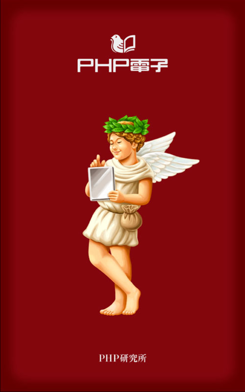
「夢ノート」のつくりかた
あなたの願いが、きっとかなう
中山庸子
「夢ノート」のつくりかた ♡ 目次
願いがかなう『夢ノート』作り
「昨日までの私」が少しずつ変わる
「小さな夢」が生まれる暮らし
たくさんの「好きなこと」を見つけよう
「出会い」に学ぶ夢の育て方
ポジティブになれる〝人・映画・言葉〟
章扉イラスト――松本孝志
本文イラスト――中山庸子
なにもかも、今から、これから ――プロローグ
★「本当は～になりたかった」の哀しさ
「先生って職業のヤツってさ、みんな『俺は若い頃、役者になりたかった』とかさ、『新聞記者になりたかったんだ』とか言うんだよね」
「そうそう、ただの先生じゃないんだってカッコつけてんだよ、ウザったいヤツら」
もう十年以上も前に高校の教師をしていた頃のこと。ある日の放課後、教室の前を通りかかると、そんな声が聞こえてきた。ちょっとギクリとした。生徒の口調は、教師の前で話す時と違って、思いっきり辛 辣 だ。
職員室に戻る。放課後の女子高校の職員室には、いくつかの、お目当ての男の先生を囲む輪ができている。
「せんせぇ、質問があるんですけどぉ」。さっきのドスの利いた声と同じ人種とは一瞬信じられないほど可愛い声も出せるのだ。最初は勉強の質問と称しているが、徐々に先生個人への質問に移っていく。
その日の職員室、そんな男の一人の国語教師の態度はひどかった。女教師のやっかみが多少あったにしても、噴飯ものの極致だった。短い足を机に乗せ、大学時代からご愛用といった感じのギターを弾きながら、「俺ってさ、本当は作家になるつもりだったんだよなあ」と遠い彼方を見ながらポロロン......。思わず心の底で、「お前は中村雅俊か！」。
でも、自分もその教師と五十歩百歩なのだと気がついた。
小さい頃から絵を描くのが好きで、イラストレーターを夢見て美術大学に進んだ私。高校教師の職についたのは、私にとって〝第二の選択〟だったとも言える。
「先生はね、本当はイラストレーターになりたかったんだよ」――授業中に発したこの一言に、〝中山先生〟という人がいかに世間知らずかが、すべて表れてしまっているのではないか。自分のことを「先生」って言ってしまうなんて。放課後だってあんなに恥ずかしく見えるのに、授業中に自分の世界に入っていたなんて。『短足の中村雅俊』のポロロン目撃以来、目からウロコは落ちたものの、極度の自己嫌悪に陥ってしまった。
★「あなたはまだまだこれからです」
そんな時、落ち込んでいる私に生徒が貸してくれた雑誌が、さらに追い討ちをかけることになった。ノンノとセブンティーン。そういう若い子の雑誌もたまにはいいか、と美術準備室でパラパラめくっていると、目に留まったのはかつての同級生の写真とイラストレーション。
もちろん、彼女がイラストレーターとしてがんばっていることは知っていたが、若い子の間では相当のスターだということが、一瞬にしてわかった。三階にある準備室の窓を開け、下をのぞいた。フラフラッとめまいがした。何だかすごーく暗い自分がいた。
私は〝イラストレーターになるための準備を着々と進める教師〟という当初の目標を見失いつつあった。あまりに遠くに来てしまったような気がした。
そんな私にとっての一つの救いは、手紙を書くこと。この時も、以前からファンレターを出していた熊井明子さんへ手紙を書いた。
『私の部屋のポプリ』が熊井明子さんという素晴らしい女性との最初の出会いだった。この本は初版本のすべてに直筆のメッセージが入っている。今も手元にある私の本には、「風になってりんごの花をゆすぶりたい」と記されている。そのブルーのインクで書かれた優しい筆跡に励まされ、本の感想を送ったのがきっかけになった。返事をいただけるとは思っていなかったのに、ラヴェンダー色の葉書が届いた。その時のうれしさと驚きは今でも思い出せるほどだ。
たぶん、うっとうしい内容の手紙だったろうと思う。熊井さん自身、教員生活を経験されたのち、エッセイを書かれるようになった方なので、甘えてストレートに悩みを書いてしまった記憶がある。そんな私に熊井さんから封書で返事が来た。
「随分前から手紙をいただいていたのですが、あなたの年齢を初めて知りました......」という書き出しで始まったその手紙は、
「若い若い、何もかもこれから！ 人それぞれで、少なくとも、あなたはまだまだこれからです」
で締めくくられていた。すでに二十代に別れを告げていた私に、この言葉は本当にうれしかった。
（そうか、私はまだまだこれからか......）
★「なりたい自分」を描くのが『夢』
うらやましい――他人の身の上や持ち物が、自分のよりもずっといいように見えて、憎く思う。また、他人がすぐれているのを見て、自分もそうなりたいと思う
（岩波国語辞典）
憎く思うところから、自分もそうなりたいと思うところまでたどりつけたら、一歩を踏み出す準備は完了したと言えるだろう。〝うらやましい〟の陰には『あなたの夢』が隠されているからだ。陰にあるので気づきにくかったかもしれないけれど、ひっそりと『夢』イコール『こうなりたい自分』が息づいているはずだ。
たとえば――Ａ子のものおじしない明るさがうらやましい。Ｂ子のセンスの良さ、そしてＣ子の英語の発音の確かさも。
Ｄ子がスポーツ万能なことも、Ｅ子の家がお金持ちなのもうらやましくないことはないけれど、それより明るさ、センス、語学力のほうがずっとうらやましかったとする。
そこには、あなたの目指す『夢』の方向が、はっきり示されているように思う。
私の場合、イラストレーターとして活躍している同級生を、心から「うらやましい」と思った。彼女は私にとって「なりたい自分」そのものだった。
そういう人になりたい。そういうことができるようになりたい。
そう願うことこそ『夢』そのもの。うらやましいことがあるということは『夢』があるということ。そして、うらやましかったら手に入れるのがいちばんだ。それが自然だし、楽しいことだ。
もちろん、簡単には手に入らない場合が多いだろう。
でもたとえば、三十分で完成してしまう五十ピースのジグソーパズルより、三百ピース、五百ピースと大規模になっていくにつれ、ワクワクと楽しさが増すように感じられるのはなぜなんだろう。それだけ手間と時間もかかるのに。
いろいろな工夫をしながらピースをはめていく。まず端から攻めていって周りを作る。色や模様でピースを分類してみたり、同じ形にカットされたものごとに分けておいたりする。二つのピースがピタッと吸い付くようにはまった瞬間の快感といったらない。でも、どうしてあんな面倒なことが楽しいんだろう。はまった時の気分のよさ以外にも理由はある。
他人に押しつけられて義務でやっているんじゃないこと、苦労しながらも次第に美しい風景画や可愛い動物、ディズニーの世界などが完成していくこと、クヨクヨしている現実なんか忘れて熱中できること、など。
これは、うらやましいことを手に入れるプロセスにしても同じことだ。誰かが「もっと明るくなって、センスも磨かなければいけませんよ」と言ってるわけではないのだから。（実際、言われてするのは全然おもしろくない）とにかく、『こうなりたい自分』が『アラジン』のパズルと同様に必ず仕上がると信じて大きな場面に挑戦しているくらいの気持ちでいたらいい。
うらやましかったら手に入れること。そのための努力なら、けっこう楽しい。
★夢をかなえる「旅」に出かけよう
「なりたい自分」になろう、無難に生きるより『夢』を追いかけよう――三十代になってようやくその手がかりをつかみかけた時、私は一つのことを始めた。
私の大好きな『私の部屋のポプリ』にはたくさんの本や詩が登場する。もっと熊井明子ワールドを深く探るために、この本の中に出てくる本をリストアップして探せるものはすべて探して読んでみよう。この試みは、とても楽しいことだった。もともと本屋にはよく行くほうだったけれど、私だけの目的のある本探しには心がときめいた。同じ本屋でちょくちょく本を注文するようになったので、なじみの店員さんもできたし、すでに絶版と言われた本を求めて図書館や古本屋に通う楽しみも知った。
『潜在意識の活用法』Ｊ・Ｔ・マンガン、『我に益あり』西村伊作、『タルキニアの小馬』マングリット・デュラス、『月下の一群』堀口大學訳詩、『大草原の小さな家』ローラ・インガルス・ワィルダーなどなど。リストを埋めていく作業はそれは楽しく、もちろんすでに持っている本が入っていることもうれしいし、なかなか見つからない本があることも、いつか出会える宝物を持っている楽しみとさえ感じられた。
そんな中で、この後に私のバイブルと言える存在になる本に出会った。『ポプリ』の中に紹介されている『信念をつらぬく』（Ｂ・スイートランド著・創元社）である。この中に出てくるＭＪＩＴＬＯＡＡＨという頭文字をタイトルにした夢の絵本作りのすすめが、『ポプリ』では紹介されていたのだ。これが、現在の私の『夢がかなうノート』の原形とも言えるものになった。これについては後に詳しく触れたい。
この本は、出だしから相当ダイナミックな発想が展開する。たとえば次のようなものだ。
ハワイに旅をするとしたら、楽しみというのはハワイに着いた後でないと与えられないものだろうか。いや、まず旅をしようと決めた瞬間に喜びがわいてくるはずだ。成功も同じこと、成功をかちとることは決して到着地ではない。それは旅である。成功しようと決めた瞬間から旅に出るのだ。出発したその瞬間に、すでに成功しているのだ。
うわぁー、と思った。なにか今まで感じていた、夢や成功は高く険しい山を延々と登っていかなくてはならない、という強迫観念を完全にくつがえす斬新な発想だった。またもや目からウロコ。でも今度のは本物だ。すっかり明るい気分になった。
そうか、まず成功しようと決めれば、その旅はスタートすることができるのか。何も動かずにいるから、他人ばかりうらやましがったり、〝無難な生き方〟に寄りかかったりしていたのだ。
素敵な旅に出ることを決めたら、さっそくたくさんの準備が必要だ。遠足の前日の〝ちびまる子ちゃん状態〟というわけだ。まずは地図や時刻表、そしてパンフレット。どんなカバンに何をパッキングしよう。ファッションは？ 靴はどんなの？
こうして、私は完全に危機を脱した。知り合いが本に紹介されていようと、すごい賞を取ろうと、もう極端に落ち込むことはなくなった。単純にその人と自分を比較して、うらやむことも卑下することも無意味なことがわかったからだ。私は私の旅に出るのだ。
それでも日々の繰り返しに疲れると、視界に薄暗いもやがかかってくる。そんな時は、この本を開いた。当時通勤に愛用していたバッグのサイズに合わせて、本の周りを一センチほどカッターで切り落とした。角も丸くカットした。そのうち表紙がボロボロになったので、うすい茶色の地に小花模様の布を貼りつけた。
オレンジ、ピンク、水色、黄色――さまざまなアンダーラインの入ったこの本『信念をつらぬく』と『私の部屋のポプリ』は、十五年以上たった今も、私を励まし続けてくれている（『私の部屋のポプリ』は『小さな幸福の宝石箱』として、大和出版より刊行中）。
成功は旅である。そして旅は楽しむものである。うらやましがる自分を知ることから始まり、うらやましいだけの人生に別れを告げ、ようやく夢をかなえる旅を始めた時に、私は本当の大人になれたような気がした。
そう、人は夢をかなえるために大人になるのだ。
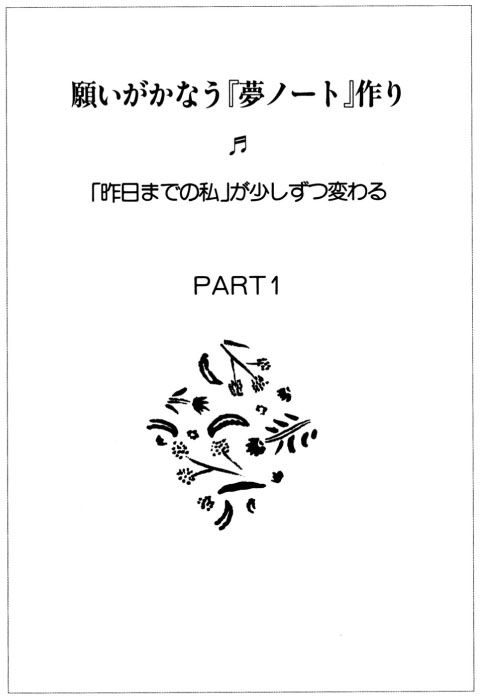
願いを言葉にすることから始めよう
♪
♪
☆初めての〝夢の種まき〟
私は、イラストレーションを描くことを仕事にしたかった。美大とかけ持ちでセツ・モードセミナーの夜間部に通ったのも、いい環境の中で〝描く力〟を身につけたかったからだ。でも、その時点では職業にどう結びつけたらいいのか、皆目見当がつかなかったし、それよりなにより自信がなかった。セツの友達のようにウエイトレスをしながらがんばるほどの根性はない軟弱者だった。
その頃、セツで一緒に絵を描いていた「松本くん」も、やはり絵を描く人になりたいと思っているように見えた。〝スペシャルな存在〟として彼を意識していた私にとって、同じ方向に夢の所在があることは、なんだかとても心強かった。お互いに、まだなにも見えないけれど、一緒に絵を描いているシーンを思い浮かべることだけはできた。それでもなお曖昧なものを残しつつ、やがて卒業の時期が来た。
私は教師に、松本くんはセツの事務所の仕事を経て、出版社でデザイナーとして働き始めた。私は田舎で就職したことを後悔せずに過ごさなくては、と相当気負っていたと思う。今でこそ「長距離恋愛」という言葉は新幹線の普及と共に市民権を得たが、その当時はなかなかの難関だったのだ。
朝、まだうす暗いうちに自宅を出て、バスと電車を乗り継いで勤め先の学校へ行き、また同じ道をとっぷり陽が暮れてから戻ってくる生活は、覚悟はしていたものの、きつかった。自分の時間を作って絵を描くなんて、とんでもないことに思えるような生活だった。しみじみ東京での四年間が、いかに恵まれていたかを知った。
やがて図書の係になった私は、司書室に小さなコーナーをもらった。そこだけは学生時代と同じ顔で過ごせるオアシスのような場所だった。毎日の仕事にアタフタと追われながらも、たくさんの言葉と出会った時期だった。
「今、自分のいる場所で行動する」
「どこでも咲ける花になる」
「あなたはあなたがそうであると思っているとおりの人である」
授業の進み具合をメモしているノートに、なにげなくそんな言葉を書きとめておくこともあった。ここで咲かなきゃほんとの私じゃないな、まず簡単なことから始めてみよう。行動するために、自分の願っていることを整理してみよう。
信頼される先生になること
松本くんと結婚すること
絵を描く意欲を取り戻す
安定した気持ち
車の免許を取ること
こんな調子で心の中を少しずつ書き出すことを始めた。
今でも良かったと思うのは、これを愚痴から始めなかったこと。文字にするということは、あとで繰り返し目にする可能性が強いから、自分で書いた否定的な言葉を自分で何度も見るという結果になってしまうのだ。あくまでも希望的側面から文字にしていった。これが私の〝夢の種まき〟の最初の作業だった。
☆今、この場所で、できること
不思議なことに、このあとしばらくすると、誰からも「最近すっかり落ち着いたね」と言われるようになった。自分は今この場所で、なにをすればいいのかが、わかったからかもしれない。もともと生徒との相性は悪いほうではなかったし、教師という職業に対する熱意だけはあったから、あとはしっかり仕事を憶えれば大丈夫――と割り切ったら、苦手な先輩教師のお説教も煩雑な事務処理も、それなりの理にかなったところがあるな、と思えるようになった。
「松本くん」の件は、意を決して休みごとに東京までドンドン足を運び、田舎のほうへぜひ遊びに来るように明るく説得した。そしてそのまま家に案内して、思い切って「結婚するつもりです」と親に紹介してしまった。私以外の関係者は「寝耳に水」っていう表情だったけれど、誠意と熱意でどうにかその場を乗り切った。こういう時、恋愛の熟練者で場数を踏んでいるより、私のように初心者のほうがパワーがある。
これと思ったら格好を気にしたり小出しにしたりしないこと。これは、これから結婚する人には、特にぜひ心のどこかで憶えておいてほしいと思う。そして、あたりまえだけれど「いちばん好き」な人と結婚してほしい。恋愛と結婚は別だという人も多いけれど、私は結婚に関しても〝無難〟を優先させてほしくない。結婚へのお膳立てが整っているにこしたことはないが、それは二義的なことだと思う。
条件が足りなかったら二人で考える。住む家も収入も持っている車も侮るわけじゃないけれど所詮は付属物、スペアはいくらでもある。でも、その人はたったひとり。「いちばん好き」に賭けてがんばってみるだけの価値はあるんじゃないだろうか。
この夢の種をメモしたノートは、私の「元気の素」と言えるものになった。
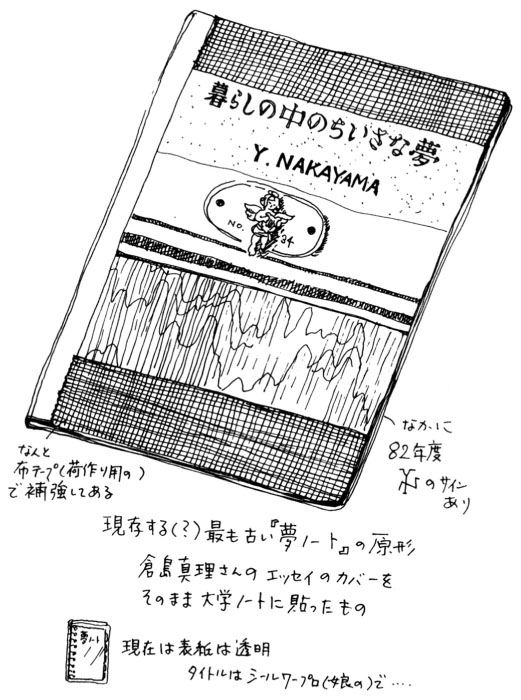
いずれイラストレーターの夢もかなうさ、こんなふうに前向きな私になれたのだった。
このうまくいった経験を、この数年後にやってくるあまりの忙しさに翻弄され『夢』を見失っていた時期でさえ、身体のどこかの感覚が憶えていたのかもしれない。
「人間は磁石である」
人は同類のものを引きつける磁石を持っているようだ。熊井明子さんはそれをマグネティックフィールドという言葉で説明している。偶然のように見えて実は必然、意志があるところに道は開ける。
いいものだけ引きつける磁石であろうとすることは、とても大きなポイントなのだ。
知らず知らず「夢」がかなうノート
♪
♪
☆心はずむ『夢の絵本』作り
『信念をつらぬく』の三十九ページには「あなたの旅のプラン」という項目がある。ここに成功の旅のプラン作りが紹介されている。
"My Journey Into The Land Of Abundance And Happiness"
この頭文字がＭＪＩＴＬＯＡＡＨである。「豊饒と幸福の国への私の旅」と訳されている。これは、欲しいと思っているものの写真や切り抜きをスクラップブックに貼っていき、夢の絵本にしていく方法だ。著者はズバリ『夢の視覚化』と言っている。
この本に出会う前からスクラップは大好きだったが、これを読んで以来、より明確に目的を持ってスクラップに取り組むようになった。細かいディテールまで視覚化しようと項目ごとに分けたスクラップを作った。
『私の夢の家』『こんな女性になりたい』『絵のヒント』『パリの魅力』
こんなふうなタイトルのスクラップ作りはとても楽しかった。もうひとつおまけに、このスクラップを作る時間を捻出したいがために、時間の使い方がうまくなったことは、大きな収穫だった。
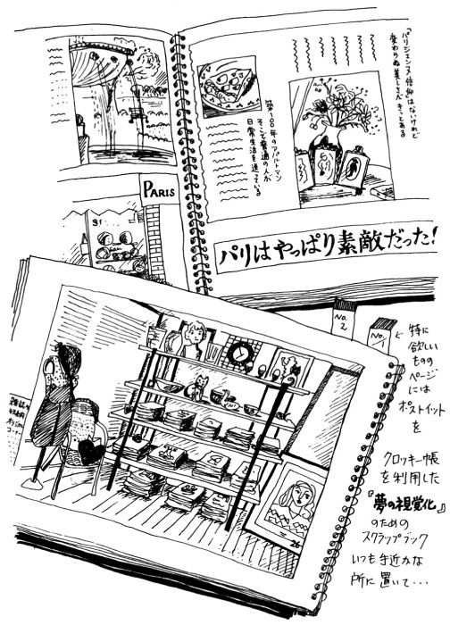
二十四時間は誰にも平等だ。私はスクラップする時間を作り出せた自分が、イラストレーションを描く時間も作り出せることを知った。ある程度計画的に時間を使ったほうが、無計画よりずっとリラックスできることもわかった。計画することで未来をシミュレーションできるので、時間に追われることがなくなって、疲労からも重圧感からも解放されることができるようになった。
たとえば、翌日着るものは前夜のうちに決めておく。さりげなくシャツとソックスの色をおそろいにするだけで、明日の朝とさわやかなつながりができるような気がする。通勤時間を一日の計画を立てる時間にあてる。なにかひらめいた時のために小さなメモ帳をバッグに入れておく。疲れた時のために気分転換の方法をいくつか用意することにした。おいしいお茶を常備しておく、深呼吸を取り入れた簡単な体操、フレッシュな柑橘系のオーデコロンを一瓶。
さて、そんなふうに前向きになった生活の中で、より『夢』にチャレンジする意欲が湧いてきたら、スクラップブックとは別に、ルーズリーフのノートを二冊用意したい。
一冊は、感動したり、明るい気分になったりする言葉の書き抜き帳にする。今までにいろいろなところに書いたものが分散していたら、この機会に一冊にまとめておくと有効。
☆願望や夢を「告白」する
そしてもう一冊がいよいよメインのノートになる。
タイトルは『夢がかなうノート』、略して『夢ノート』。
まず最初は思いつくまま、あなたの中で漠然としている願望や夢を書き出していく。順不同、行き当たりばったりでオーケー。ただひとつ注文するとしたら、恥ずかしいという気持ちをちょっと脇に置いておくということ。日記と同様、誰にも見せないものだから、すべて本当に欲しいものを、思いっきり「告白」してしまうのが大切。
できるだけ欲張っていくつでも、できれば百の大台に乗せるくらいの気持ちで取り組んでほしい。
たとえば、
○有名になりたい
○シャネルのバッグが欲しい
○英語がペラペラになりたい
○５㎏ダイエットしたい
○ミラノに行ってみたい
○レポーターの仕事をしてみたい
○すてきなボーイフレンドが欲しい
○行動力が欲しい
○百万円貯金したい
○ボランティア活動をしたい
○専用の電話が欲しい
○おしゃれなパーティーに招待されたい
○心の安らぎが欲しい
○椎名誠さんに会いたい
○泳げるようになりたい
○本場のオペラが観たい
○ハワイにコンドミニアム
○本を書いてみたい
○きれいになりたい
○幸せになりたい
これでようやく二十、こんな調子でドンドン書き出してみる。カフェオレでも飲みながら、ウキウキ気分で書いてみたい。どんなに飛躍しても気にせずに、一度にこんなに欲張ってとも思わないで。「金魚鉢が小さいと、いつまでも金魚は大きくなれない」という格言があったように思う。
それでも百個並べるのは意外に大変。けっこう慎ましい願い、新しいジョギングシューズが欲しいとか、虫歯を治したいなんていうのまでリストアップされたりする。この作業、自分が何者かわかってすごくおもしろい。ぜひトコトンやってみよう。
一覧表作りは一日で終わりにせず、思いついたらまた書き加えていく。一週間ほどしたところで一回、また別のページに、分類したものを書き出してみるとわかりやすい。さっきの二十を例に取ると、
Ａ 財産、物に関するものシャネルのバッグ、百万円、電話、コンドミニアムなど
Ｂ 身体、精神に関するものダイエット、泳げる、心の安らぎ、幸せなど
Ｃ キャリア、仕事に関するもの有名、英語、レポーター、本を書くなど
Ｄ （仕事以外で）体験したいものミラノ、パーティー、椎名さん、オペラなど
中には分類がむずかしいものもあるけれど、自分だけの内輪のことだから、あんまり厳密に考えないでとりあえずどこかに入れておけばオーケー。
☆願いがかなった時こそ自慢しよう
さてこれで、
『夢の視覚化のスクラップブック』
『夢実現を応援する書き抜き帳』
『夢ノート』
この三つが揃ったことになる。必ずしてほしいのは、これらを作ったり書いたりする作業の時だけ開いて見るのでなく、暇があるごとに、できれば一日に何度でも手に取って見るということ。
特に『夢ノート』の一覧は、いつも身近に置いてほしい。絶対、夢をかなえるぞ！と力む必要はないが、事務的に流して見るのではなく、それがかなった時のうれしさを想像して、いい気分で眺めてもらいたい。かなった時には王冠マークをつけてもいいし、ピンクのハートのシールを貼ってもいい。自分のお気に入りの〝かなった記念〟をノートに記すこと。私自身、『夢ノート』のぺージを振り返ってみると、すでにかなった夢のマークがあまりにたくさんあることに、今さらながら驚いているくらいだ。
♡『夢ノート』について書いた本を出版する
♡その本の表紙は、夫の松本孝志のイラストレーションで飾る
♡南青山に自宅兼事務所を構え、二人で仕事をする
♡男の子と女の子の母親であることを楽しむ
♡週末はウィークエンドハウスでの生活を満喫する
♡神宮外苑でテニスのレッスンを受ける
などなど、はじめは想像の絵にしかすぎなかったことが、ひとつずつかなえられ実現していくことは、本当に心躍る旅そのものだ。ちょっと自慢に聞こえるかもしれないなどと、遠慮することはない。自分で獲得したものを喜び自慢することは、恥ずかしいことではなく、ごく自然な感情なのではないかと思う。
宇野千代先生の言葉を借りるまでもなく「自慢は自分を救う最良の方法」なのだ。自慢が嫌みになるとしたら、相手をおとしめる目的でそれを利用した時。自分が幸せでいたかったら、人の幸せに寛容になることだ。
もし、人のすることばかり気になったり、人の不幸になぐさめられたりしているとしたら、嫉妬や妬みのネガティブ方向にエネルギーを取られている状態だ。すぐに香りのいい紅茶でもいれ、この『夢ノート』を開いて、本来のポジティブな自分を取り戻すことにしよう。
〝夢の種〟を〝本当の夢〟に育てる方法
♪
♪
☆まず「すぐできること」を探してみる
『夢ノート』のいいところは、願いを書いただけでも心に刻まれて、知らず知らず自分が変わっていくことだが、自分の願いをかなえるためにどうするか、具体的に考えをめぐらすのも、また楽しい。
夢のひとつひとつから生まれた「すぐできること」を、いくつか見ていこう。
夢の種① ミラノに行ってみたい
すでにスクラップブックには、イタリア関係のパンフレットや雑誌の特集の切り抜きが貼られていることだろう。その次といったらやはり、取り扱っている旅行社の窓口に電話することになる。より詳しく具体的なプランを聞いてみることだ。日程、予算、旅程などなど。あるいはこれが初めての外国旅行の計画なら、とりあえずパスポートを取りに行くという行動を起こしてもいい。それなら市や区の旅券課に電話してみることから始める。住民票を取ったりの手続きも、イタリアにつながっていると思えばたやすいことだろう。すぐに旅行する計画が立たなくても、手元にパスポートがあるだけで、一歩ドゥオモ広場やモンテ・ナポレオーネ通りに近づいた気分がするはずだ。
もしイタリア通の友達がいたら電話してもいい。過去の旅行の経験、どんな方法で彼女がイタリア旅行を手に入れたかを聞くことは、すごく参考になるだろう。うまくすれば現地に知り合いがいたり、安いツアーの情報も手に入るかもしれないし、彼女自身が次のイタリア行きを計画している可能性だってある。
ここでひとつ考えてほしいことがある。それはなぜミラノに行ってみたいのかという理由だ。テレビで見たら素敵だったから、買いたいものがあるから、イタリア料理が好きだから、いつか留学してみたいから、それはファッションの勉強か建築の勉強か、語学、歴史......。これらのどれにあたるかによってアプローチのしかたが変わってくるのは当然だ。
理由がシンプルなら方法もシンプル。いわゆる観光ツアーでいいなら、お金と時間の二つが揃えばいい。
あなたが勤めているならまず有給休暇と貯金を貯めることから開始、だろう。無駄な外食とか夜遊びが減って、スリムになるというおまけまでつくかもしれない。もし結婚しているなら家族の協力、これはなかなかに手強いが、不可能じゃない。方法は交換条件方式、夫や母親と労力やお金のギブアンドテイクを上手に持ちかける。ただし、ただの観光より大義名分があったほうが成立しやすいかもしれないけれど。あなたが学生ならオメデトウ、時間はまず問題ないだろうし、多分お金もきちんと計画を立てればどうにかなる。すでにある貯金を元にして、あとはアルバイトする。もっと虫のいい場合は親にもらう、親から借りる。
旅の夢をかなえたひとつに、私の教え子のこんなケースがあった。親が成人式に買ってくれるといった着物の費用を現金でもらい、イギリス旅行の資金にあてた。ただし親は「娘の晴れ姿をきちんと写真に納めておきたい」という願望があるだろうから、友達から振袖一式は借りることにした。その友達には旅行先で安く買ってきてほしいものをリストアップしてもらい、便宜をはかることでレンタル料のかわりにした。私のもとにはバッキンガム宮殿を背景にピースサインを出している彼女からの絵葉書が届いた。単にちゃっかりしているようだけれど、私は彼女のもっと大きいほうの夢を知っていたから、葉書の中の彼女に「第一歩だね、ガンバレ」と声をかけた。
彼女は小さい頃、身体が弱かった。特に小児ぜんそくはひどかった。子供の頃に外で遊んだ記憶はほとんどないと言う。小学校も三年生くらいまでは、友達を作るひまもないくらい通院したり入院したり。そんな彼女の楽しみは、はじめは絵本、そして字が読めるようになると世界児童文学全集だったらしい。私と知り合った時の彼女は、すでに小さい頃の身体の弱かった自分や友達のいない自分を完全に克服していた。泳ぐことで体力や自分自身の記録と戦う強さや友情を手に入れて、昔の文学少女の面影はどこを探しても見当たらないほどたくましく、明るく見えた。
彼女は薬学部を志望していた。理由のひとつは、小さい頃の自分にとって、友達の代わりをしてくれたのが病院の白衣のお姉さんたちだったこと、と言う。看護婦さん、そして薬局のお姉さん。薬のありがたさを幼い頃から身にしみて知っている。
「しょうらいはなんにでもきくくすりを発明するひとになりたい」
そんな彼女はもうひとつ夢を持っていた。それは、児童文学の世界をより深く知ることだ。これも薬と同様、彼女が幼い頃から親しんできたものだ。そしてたくさんの勇気や希望を与えてくれたものだ。自信を持ってこれこそ「いちばん好きなこと」と言えるだろう。薬学を使命とすれば、児童文学は親友と言えた。
文学部へ進む道をあえてとらなかったのは、学校以外のところでも親友と再会できると信じていたからだ。医療は日々進歩する。背負うリスクも大きいから、責任は重大だ。その道でプロになる、そして児童文学の宝庫、イギリスを訪れる。Ａ・Ａ・ミルンの『クマのプーさん』、Ｌ・キャロルの『ふしぎの国のアリス』、そしてＰ・Ｌ・トラヴァースの『メアリー・ポピンズ』やＭ・ノートンの『床下の小人たち』を訪ねる旅。彼女こそきっと、日々の仕事と夢を両立させる生き方の良き実践者になるだろう。
さてと、ミラノに舞台を戻そう。もし留学してみたいなら、イタリア語のテキストを手に北イタリアの空気を胸いっぱい吸い込むつもりで深呼吸してみよう。オペラが観たいなら、前方のスカラ座の建物を眺めながら、石畳の街をさっそうと歩く姿をイメージしてみよう。いずれ、あなたの夢は必ず実現することになる。
夢の種②―１ シャネルのバッグが欲しい
旅が、お金と時間の両方を捻出することで可能になるとしたら、シャネルのバッグはお金さえあれば手に入れることができるものである。ただ、ひとつのバッグに二十万円近い、あるいはそれ以上の金額を払うことは、ごく普通の私たちの感覚ではかなりの出費だ。そうなるともう少し、夢を詳しく書き直した方がいいかもしれない。
『シャネルのバッグをできるだけ安い値段で手に入れたい』
一番いいのは誰かがプレゼントしてくれることだから、一応この線も願望として書いておく。虫がいいことも時としてかなえてくれることがあるのがこの『夢ノート』の特長である。なにせ人間は磁石であるから、いつ「ヤッター、これが欲しかったの」というプレゼントを引きつけられるかもしれない。
手頃な値段を先行させるとしたら、チラシのチェックを怠らず、ディスカウントショップをこまめに回る。シャネルのディスカウント評論家をめざせるかもしれないくらい見て歩けば、これというバッグにきっと出会えると思う。さっきのイギリスに行った彼女のように旅行する友人をキャッチして、買ってきてもらうのも一手。ただし、金額が張るものだから、お互いの信頼関係がきっちりできている必要はある。
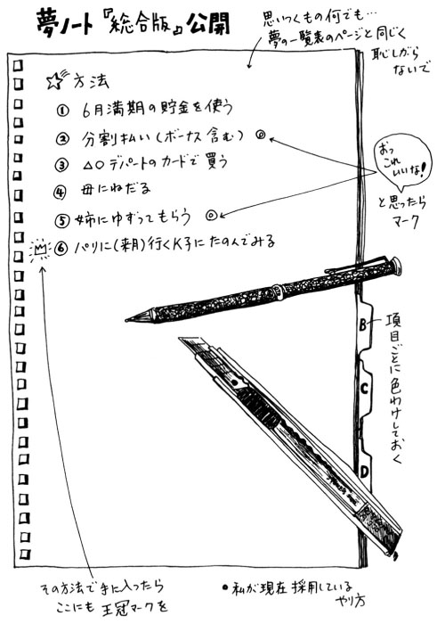
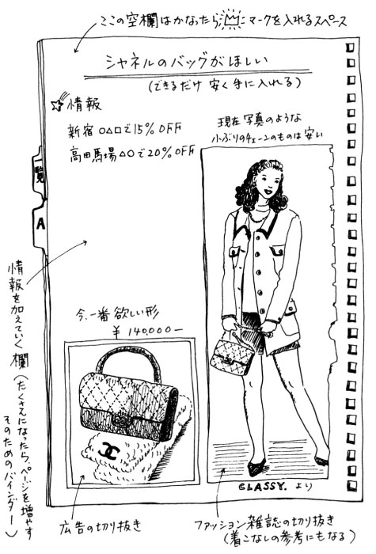
さてここでちょっと注意したいのは、違った理由を奥に秘めている場合のシャネルバッグというのも存在する、ということ。
よくあるケースとして考えられるのは、同じ職場あるいはクラスのＡ子が持っているから私も欲しい、という場合。この場合はシャネルバッグはひとつの象徴にすぎなくて、問題はＡ子との間にある一種のライバル関係がもたらしたものということになるだろう。
これは、新しい項目、Ａ子を見返してやりたいというのを設けるべき。こういう願望のありかたも、否定しないほうがいい。はなからいけないと芽を摘んでしまわずに、自分の中ではっきりさせる段階を踏んで、より素敵な自分になるという前向きな願望に変えていくという方法もあるからだ。
そうだ、「私」はＡ子がうらやましいのだった――と認めてみる。Ａ子のバッグがうらやましいのでなく、Ａ子自身がうらやましいのだ。私の持っていないのはバッグではなく、Ａ子のプロポーションの良さだったり、そこからくる自信のようなもの、たとえば人前でも物怖じしない明るさにつながっていたりするのだ。そして、私が密かに好意を寄せているＢ君とＡ子がさも親しそうにしていたりすると、この事態はもう「うらやましい」が加速して目まいがしそうな状況なのだった。
この場合、ここでよりはっきりするのは、Ａ子のプロポーションの良さや明るさに魅かれているように見えるＢ君の関心が本当に〝欲しいもの〟だった、という事実だ。Ａ子の積極性も欲しいがＢ君の気持ちのほうがもっと欲しいのだ。シャネルのバッグはＡ子になり、そしてＢ君にたどりついた。
夢の種②―２ Ｂ君と親しくなりたい
どちらかというと内向性の人のたどる思考パターンでここまでやってきた。テキパキした、自分を抑え込むことをしないタイプの人なら、こんなまわりくどいことをしなくても、Ｂ君をまず一番にあげていただろう。でも、本当に欲しいものを見極めるのはなかなかにむずかしいものだし、それが単にお金で買えないものだということがわかっているからこそ、リストにあげられないという場合もある。好きな人ってそのくらい神聖なものだ。
でも、『夢ノート』に例外はない。自分に本当のことを話そう。自分の好きな人に、私のことも好きになってもらいたい、というくらい自然なことがあるだろうか。
まずは、リラックスの周波数を出すアンテナが頭の上に立っているとイメージして、解放される感じの電波を出してみよう。
これはどういうことかというと、ひとつにはＢ君を好きだという気持ちを自分の中で寛がせ解放してやること。好きでいい、とまず認める。
そしてＡ子を嫉妬する気持ちも認める。けっしてＡ子に罪があるわけでなく、私もＡ子のように振舞いたいにもかかわらず、できない自分がいるわけで、Ａ子は私のシャドー、可能性としての「もうひとりの私」なのだと認識することだ。「しばらくは、やきもち焼くかもしれないけどヨロシク」ってとこかな。
これでだいぶ気が楽になるはずだ。本来集中すべきことは、Ａ子でなくＢ君なのだから、とりあえずＡ子にどんな感情を持とうとも、気がとがめたり卑屈になったりすることはない。やきもちなんて可愛いものだ。
次は当然、Ｂ君のデータ集めをすること。この場合、血液型や星座もデータとして否定はしないけど、占いオバサンのようにだけはならないこと。絶対に今以上にもてなくなることうけあいだ。どんな男の子でも一人前の男性でも「何座の何型？」と聞く女に三回以上うんざりさせられた経験を持つだろう。
もちろん、誕生日はデータの必須項目だが、これはプレゼントなどの戦略に使えるからであって占いの拠り所にするものではない。それより、そのＢ君が好きなこと、欲しいもの、夢といったものを探ることだ。新たなＢ君を、というか本当のＢ君を知ることができるはずだ。その糸口がつかめれば、楽になる。この話題は一見、相手に合わせているようでいて、実はこちらが優位に立てる最良の話題なのだ。
サッカー好きの男の子にはサッカーを語らせること。アウトドアライフにあこがれを持つ男性にはキャンプのやりかたや自然についての質問をすること。音楽好きだったらお薦めＣＤを聴く。なにより助かるのは、相手がこちらのことを（まだ別に）好きでなくても、むこうの好きなことが話題だから変に気をつかわなくても、座が白けないことだ。相手にドンドンしゃべらせていい気持ちにさせておいて、こっちは彼の表情をたっぷり楽しみ、データの収集もバッチリというわけだ。
もてる女は本来話しやすい雰囲気を持っている。もともとそれを持ち合わせていなかったらこの際、それを体得しよう。相手の夢がなんであるか摑むことが肝心だ。そして、男は自分が小さかった頃から今まで好きになったことや夢中だったものについて熱心に聞いてくれる女性の存在を渇望している。私は、それはグッドプロポーションにも負けないナイスなポイントであると判断する。あとはハートのあるいい女であろうと努め、自分の夢を大切にしていたら、きっとうまくいく。
＊
②― １のように、シャネルバッグからＡ子との関係に気づいたということは、夢が一歩先へ進んだ、あるいは夢の脇道からメインストリートに入ることができた、とも言える。
夢や希望がかなったはずなのに、なぜか虚しい......という場合、このようなパターンの展開が多いからだ。Ａ子の持っているのより新しいタイプのシャネルバッグを手に入れても、Ａ子はすでに、エルメスやカルチェを手に入れているかもしれないし、ブランド品は卒業してカルチャー方面に進出しているかもしれない。これでは、いくら『夢がかなうノート』に項目を増やしていっても、その項目を手に入れていっても幸せな気分にはほど遠いだろう。
『夢ノート』は、幸せな気持ちで実現していってこそ、意味がある。そしてシャネルバッグであってもミラノであっても、それを得たあとも心ときめくものでなかったら、本当に欲しかったもの、大好きなものでなかったということになってしまう。これではもうＡ子に勝てないと、箱の中にしまったままではせっかくのシャネルバッグが可哀想だ。そして私たち女性は、よくこれと同じようなことを繰り返してはクローゼットや引き出しを『後悔』の二文字がスタンプされたものでいっぱいにしてしまう。どうか気をつけて。
さて、②が思いがけず長くなってしまったが、恋愛ではないけれど、あこがれがかなったこんな話を一つ紹介してしめくくりたいと思う。
夢の種③ 椎名誠さんに会いたい
これは私の身近な人の話。
引っ越してくる前に、娘が通っていた小学校でのこと、例年のようにその年もＰＴＡ活動で講演会が企画されることになった。
たいてい最初の希望では、著名な人の名前があげられる。それは本やテレビの世界で活躍する有名な文化人という線が多い。私も前年に、その成人教育部の係をしていたから、お母さんたちの話の盛り上がりは容易に想像がつく。ただし実際には、日程と謝礼の額という二つのハードルがすぐ目の前に立ちはだかり、妥当なライン、その地域の有識者で決まるというのが通例だった。
その年の希望は圧倒的に椎名誠さんだった。熱心な読者のお母さんのひとりが、事務所の電話なら知っているということで、早速連絡をとってみたらしい。もちろん、忙しい方だから、「無理だと思います」という返答に一同がっかりしたものの、仕方ないな、という空気が流れかけたのは当然だ。
例年なら、ここで実現しそうな人選に入るところだが、この年の委員長さんは違っていた。椎名さん宛の手紙を書いたのだ。後日、彼女に聞いたところでは、自分でも驚くくらいの熱意で書けたという。
率直に、地方の小さな小学校のＰＴＡで、使えるお金も限られているし、条件が悪いのは承知で、お母さんたちの気持ちを代表してお願いしたということだ。それ以上のなんのマジックもない。タイミングか熱意か、何が最終的に椎名誠さんを動かしたのか、私にはわからない。でもとにかく、椎名さんは北関東の小学校に砂ぼこりをあげながらジープでやってきた。
ここにひとりの若い女性が登場する。彼女は私の教え子で名を松本さとみと言う。彼女ははっきり言って手紙魔だ。私のところにも週刊誌以上の頻度で情報が送られてくる。電話も相当かけるほうかもしれない。
椎名誠氏来校が決まって学校中のみんなでうれしさに盛り上がっているその日、「先生、なにかおもしろいことないですかぁ」と電話してきたのが彼女だった。自慢屋の私がこれだけのニュースを黙っていられるわけがない。
「それがさあ、椎名誠さんが来るんだよ」
その時の彼女の驚きかたは凄かった。急に赤城山が爆発したってあんなには驚けない。高校生当時から彼女は、私の授業中の無駄話の熱心な聞き手だった。当然、彼女も夢のリストを持っていた。その願いのトップが、本物の椎名誠さんに会うことだったことを私はその時知ったのだ。もちろん当日、彼女は会社を早退して、飛ぶように小学校の体育館にやってきた。
このエピソードを単なる偶然と笑うこともできるが、あえて私が長々と解説をつけるまでもないと思う。とりあえずここで言いたかったことのまとめだけしておきたい。
まず「すぐできること」を探してみる。悪い結果を待ちかまえず、その時の自分の気持ちどおりに行動してみる。あとは水面に投げた石が次々に輪を描くように、夢の輪も広がっていくはずだ。
『夢ノート』・お楽しみ版
♪
♪
☆気が乗らない日の〝切り抜きタイム〟
「コンディションは行動しながら整えよ」
すべての条件が揃うまで待たなくては夢をかなえるための行動を起こす資格は得られない、という考えからはすでに解放されたことと思う。そう、待ちだけの人生から得られるものはごくわずかなものだし、喜びのスケールも小さい。「自分で薪を集めたら二倍暖かくなる」というのは本当だ。
そうは言うものの、いつも攻めの人生ばかりでは疲れてしまうし、気が乗らない時だってある。そんなふうに気が脆 くなった時は、「今は『充電タイム』」と自分に言い聞かせよう。思い切ってネジやボタンをゆるめてやる。私の場合もいくつか兆候があらわれる。
まず人に会いたくなくなる。ファンデーションや口紅をつけたくない。通販カタログを広げてなにか注文したくなる。前から欲しかったものでなく、なにか気分が晴れるもの。気がつくと朝食の片づけもせず、十時近くまでワイドショーの画面をボーッと見ていた。こんな時は黄色信号だ。明らかにバッテリー液が切れているのだから、補充が必要だ。
そんなある日、通販カタログのランジェリーの広告ページでこんなタイトルを見つけた。
「体型をカバーしてもっとすてきになる」
これ自体はなんということはないフレーズなのだが、「体型をカバーして」で一行、「もっとすてきになる」で一行というように二行にわかれていたのだ。
「もっとすてきになる」。これいいな。体型の部分はすっかり無視して私は後半部分のフレーズだけを切り抜いた。
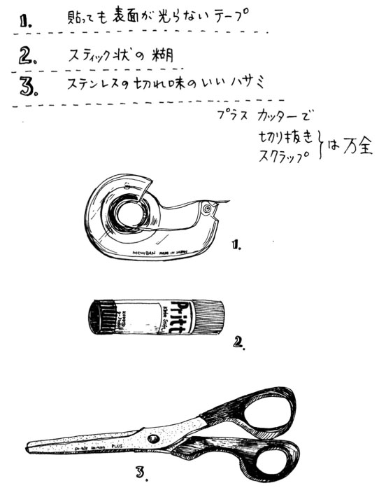
今まで着てみたい服やかわいい小物、おしゃれなインテリアなど写真の部分はよく切り抜いていたけれど、『言葉』を切り抜くというのは思いつかなかった。それもちゃんとした学識者の対談やヒューマンレポートなどという、きちんとテーマのあるものでなく、広告ページのコピーというところが気軽で楽しい。だから必要ない商品やブランドの固有名詞のところはジャキジャキッと切り落としてしまう。自分の気持ちに触れた素敵な言い回しやイメージのところだけ、サッといただくというやり方だ。
☆「言葉のスクラップ」を楽しんで
存在を表現するエレガンス
わたしの時を楽しむ
暮らし、大きく、四季と一緒に
夢の経験ができるよろこび
心のスタミナ
静かに、だけど、輝き続ける
誰もが、もっと美しくなる才能を持っている
「これからよね」というあなたのために
退屈を送りに行く。夢を迎えに行く。
これ、驚いたことにたった一冊の女性雑誌の広告コピーから切り抜いた言葉の一部分、なかなかの名文句のラインナップというところ。考えてみれば、きっとどれも優秀なコピーライターが作ったものにちがいないから、短い中にピカッと光るものがあるのは当然ではある。本来は商品を売るためのものではあっても、買い手は商品と一緒に幸福感や満足感も得たいということを企業側は充分承知しているから、コピーにもそのポリシーが反映されているというわけだ。
すごくポジティブでいい言葉ばかり。その下着や化粧品やアクセサリーを買わなくても、なんだかこのタイトルが醸し出しているエッセンスだけで素敵な気分になれそうだ。この言葉たちの切り抜きを『夢ノート』に利用しない手はない。自分の直筆で書くのはちょっと照れてしまうような場合でも、これなら安心だし、きちんと印刷された活字だと変な生々しさがないのがいい。そして大抵広告のコピーは文字が大きくて字体もしゃれている。
充電タイムには格好のお遊びになると思う。ハサミでチョキチョキ切るだけでも童心に帰って楽しいものだし、読み物やファッションページには差し支えない広告ページの切り抜きだから気も楽だ。自分の気分のまま言葉を貼っていってもいいし、イメージ写真の切り抜きと組み合わせたり、小さいカットを飾りにしてもいい。要は今は、作ることが楽しければそれで充分、元気が出てきたらそれでいい。これは『夢ノート』・お楽しみ版としておこう。
これでノートとしての提案は四つ目ということになるが、厳密に「さあ、あなたもしっかり四冊作りましょう」という意味ではない。最初に少し触れたように、こういったものの中から自分の性格や好み、暮らし方などに一番フィットする自然なやり方で作ればいいということだ。
たとえば二冊目に挙げた『夢実現を応援する書き抜き帳』なども、いちいち書き抜く手間が惜しいという人は、このお楽しみ版と同じように、切り抜いて貼っていくやり方でもいい。単行本や借りた本などの場合は、そのまま切り抜くわけにはいかないからコピーする。コンビニエンスストアで一枚十円。せっかくだから拡大コピーしておくと、見やすいし切り抜くのも楽だ。たとえば今日は百円まで、と決めて十枚に絞ったりすることも、自分にとって本当に必要な言葉や考えかが明確になっていいと思う。
もし良かったらコピー用に三つほど......。
「成功の鍵はいつでも手のなかにある」
「好きなことを、好きな場所で」
「言葉は人の心を左右する魔術師である」
望みを少しずつ実現する
♪
♪
☆「小さな成功」は「大きな成功」への道
確かに、いくら『夢ノート』を作ったからといって、すべてが一夜にして劇的に変化するわけではない。でもそれは、超高速の飛行機に乗ったとしても、一瞬の間に目的地に着かないのと同じこと。繰り返しになるけれど、『成功は旅』であるから、焦らずにひとつひとつのプロセスを楽しみながら、前に進んでいこうとすることが、賢い旅行者になる秘訣と言えるだろう。
以前、明らかにビジネスでないけっこうゴージャスな旅行者に見えるのに、なぜか旅を全然楽しんでいない雰囲気の女性を見かけたことがある。
機内のちょっとした不自由に大げさに不満の色をあらわし、遅れやしないかと到着時間に気を取られているふうで、果ては今から宿泊先のホテルのシャワーの心配までしている。せっかくの飲み物や読み物のサービスもイライラとして楽しまず、窓からの見事な雲海にも一瞥 もくれない。この女性が定刻通り無事到着したとしても、旅行先のあらゆるところでどんな態度を取るのか、なんとなく目に浮かぶような気がした。
私たちは、その女性と比べればずっと喜び上手なはずだ。
彼女が、物質的には相当恵まれているであろうことは、その手入れされたヘアスタイル、服装や持ち物でよくわかる。でも、旅を楽しめない。多分彼女には、私たちのような素朴とも言える夢がない。なにか大切なものをあきらめてしまった人特有の乾いた表情をしている。旅と日常の間に心ときめくコントラストがない。私たちは、がんばっている日常とリフレッシュの旅の両方を満喫することができる。傲慢で不満いっぱいになった心は、小さな望みや楽しみを踏み潰している事実に気づかない。
まあ、赤の他人のことだからこんなふうにきっぱり見通したようなことが言える。実際は、私たちだって彼女と似たような穴に落ちることもあるだろう。
ただ、これだけは言える。大きな夢を持つことはけっして傲慢になることではない。コンドミニアムが欲しいからといって、友達への小さなプレゼントまで目をつぶることはないし、今のワンルームの住まいを嘆くこともない。大きな夢が小さな望みを圧迫するのではなく、小さな望みを捨てずに、小さな成功感覚をたくさん身につけていくことで、大きな成功の道にごく自然につなげていけるはずなのだ。『夢ノート』に書かれたことは悩みや不満や難問ではなく、楽しく取り組む企画案、実現を楽しむリストなのだ。
☆決心したら、楽しく実行
たとえば、ダイエットの件である。今や、ダイエットにチャレンジしたことのない女性を探すほうがずっと難しいくらいだし、いろいろと問題のある方法も多いことは事実だ。でも明らかにダイエットが必要な時もある。私の場合、まさに今がその時だ。
昨年四月、夢かなって学生時代以来である久々の東京暮らしを始めた。それは前からあこがれていたポジション、イラストレーションとエッセイに打ち込める土台がようやく整ったということだ。
もともと緊張体質の私のことだから、必要以上に力が入っていたのだろう。よし、がんばるぞ！が食欲に直結してしまったのだ。
特に夕食。精一杯気を使っていた一日もようやく先が見えてきた、そんな夜までたどりついたことで一気に気が緩み、食欲をコントロールする力が働かなくなってしまったらしい。その上、引っ越し荷物の中にはヘルスメーターが入っていなかった。ゴタゴタしていた新しい生活も整理がつき始めた七月、ようやくヘルスメーターを購入した（ちょっと身体が重たい感じがするけど、大丈夫かな）。そっと足を乗せると、ガーン！ その三か月足らずの間に、なんと四㎏も増えていたのだ。
引っ越してくるまでは、都会に出たら垢抜けてすっきりするだろうという甘い見通しでいたのも事実。かつての東京生活の時は確かに、ポチャポチャしていた高校生からみるみるスマートな女子大生になったものだった。それは考えてみれば寮の食事に慣れていなかったせいもあるし、年齢的にもちょうど子供っぽい体型から大人になる時期だったのだろう。
今は違う。中年太りと言える年齢のまっただ中にいるわけだ。美容と健康の両面を考えるべき年代である。そのうえ青山という土地柄、近くには素敵な構えのおいしいケーキが食べられるお店もたくさんある。正直なところこれを試してみない手はない、という好奇心もあった。ほんとにもうトリプルの太り街道まっしぐらをやっていたことになる。これがダイエットすべき事態であることは疑う余地はない。
でも四㎏増えた自分を嫌いになったり、嘆いたりしているかと言えばそんなことはない。この間、私は風邪ひとつひかなかったし、新しい環境にグングンと慣れていくこともできた。このおいしいものたちの、言い換えれば四㎏の皮下脂肪のおかげでこの時期を乗り越えられたとも言えるからだ。そして翌八月、とりあえず三㎏のダイエットを実現させることを『ノート』に明記した。
そしてこれを書いている今は、それから二か月後である。一・五㎏の減という現実は、もうひとつスピードがないと言われるかもしれないが、いい線だと私は思っている。今でも友達とおいしい洋梨のタルトも食べられるし、夕食の時に夫と冷酒を楽しむこともできる。私の計画では、この本が店頭に並び、私の東京ライフが充実の一年を経過したところで、もとの体重に戻っていればグッドということなのだ。すでにご褒美も考えてある。今、一番のお気に入りブランドの（と言ってもまだ一着も持っていない）フォクシーのニットのワンピースである。
参考になるかわからないが、現在私が実行していることは、意識してよく嚙みゆっくり味わいながら食べること。飲みものは甘味料入りや炭酸類は避ける。原則として朝はしっかり食べて、夕食は軽くする。おかずがおいしいと感じる時は、ご飯を減らし、ご飯を食べて落ち着きたい時は、さっぱりしたメニューにする。体重がまず月曜より増えない状態で一週間がクリアできること。体調が良かったり、テニスや散歩ができる余裕がある時には、『減らすぞ』と意識して食事を軽くする。
疲れている時はけっして無理にダイエットを考えない。食生活を粗末にしたり、必要なカロリーまで摂らなくなることで元気がなくなってしまい、幸福感を持てなくなるほうがダメージが大きいと思うから。
確かに「体重を元に戻すだけのことじゃない。それが『夢ノート』に書くほどのことなわけ？」と問われれば、うーん、ちょっと一理あるかもしれない。でも、小さい望みも捨てずに大事に考え、やるぞと決めたことを成し遂げるのは、それがどんなに些細な小さなことであってもうれしさがともなうものだ。
うれしいことはいいこと、そして何より自信がつく。自分を信じられる材料になる。その時その時で精一杯やることは、体重は元に戻っただけでも、前の自分にただ戻るのとはちがう、なにか『ある種の強さ』が培われたのではないかと思えるのだ。
『意識的楽天主義』のすすめ
♪
♪
☆夢にブレーキをかけていませんか？
ひとりの人間が得られる幸せの量は限られていて、最初にいいことばかりがあると後半生が不幸だとか、ひとつラッキーなことがあると遠からずアンラッキーなことが起こる――こんな考え方は、私たちの中にけっこう根強く行き渡っているような気がする。確かによくないことばかり続いている場合は、この考え方は救いになる。あとにいいことが来ると信じられれば、少しでも今の逆境やうまくいかないことへの慰めや励みになるからだ。
でも、なにかを犠牲にすることでしか、いいことが得られないというようなジンクスみたいな考えは、断固として信じないほうがいい。私たちは古墳時代に生きているわけじゃないんだから。
原始的な生活では、人間の力で解決できることがあまりに限られているせいかタブーを多く作ってしまい自由に身動きできなくなる、という側面があったのは事実。
アフリカのある地域には、生まれた時に呪術師がその赤ん坊のタブーを決める種族がいるという話を読んだことがある。「この子はバナナを食べてはいけない」と言われ、親も本人も忠実に守っていた。がある時、祭りでご馳走を食べ、その時はなんでもなかったのに、後で「あの料理のひとつにバナナが入っていた」と聞かされ、心臓マヒを起こしてしまったという。
こんなに極端でなくとも、私たちもついネガティブな暗示に足を引っ張られてしまう傾向がないだろうか。あるいは、過去の失敗を繰り返し思い出しては、現在に暗い気持ちを持ち込んではいないだろうか。幸福なこともたっぷりあるはずなのに、ひとつうまくいかないことや心配事があると、すべてをその色で塗りつぶしてしまってはいないだろうか。
そして、夢がかなうことや成功を恐れる気持ちがどこかに潜んでいることも、よくあることなのだ。
「私たちは成功したがっている。しかしまた、成功したがっていない」
これはある面の真実の言葉と言えるかもしれない。でも成功すること、なにかがかなうことは、必ず別のなにかを失うこととイコールなのだろうか。
なにを失う心配をしているのだろう。なにが夢をかなえるブレーキになっているのだろうか。たとえば友人？ もしかすると、周りの人々を超えようとしている野心を持つこと、その心を知られることを恐れている？ 自分が逆の立場だったら相手に感じるかもしれない嫉妬のようなものを想像して、自己規制してしまっているのかもしれない。
しかし、その友人には果たしてなんの夢もないのだろうか、あなたはそんな魅力のない人とだけ付き合っているのだろうか。あるいはあなたのほうが夢もなくパッとしない存在だと、いい友達でいられるとでもいうのだろうか。
夢をかなえる行動にブレーキをかけさせる考えは、身近なところにいくらでも存在する。誰でもペシミストになるのは簡単なのだ。人生は思い通りにならない苦しくつらいものだというほうが、重く説得力があるのだ。でもこんな考えに説得されたところで、なんの得があるのかと思う。「ほーら予想どおりうまくいかなかったでしょ」なんていう哀しい自慢は、一生したくないものだ。
ここで「意識的楽天主義」という提案をしてみたい。悲観的考えのほうがずっと無意識のうちに、はびこりやすい性質を持っているからこそ「意識的」という冠が付くのだ。ただの楽天主義者ではないところがポイントになる。
私の愛読書のひとつである『恋も仕事も思いのまま』（集英社文庫）は、コスモポリタンという雑誌の編集長であるヘレン・ガーリー・ブラウンが書いたものであるが、その中にこんなフレーズが出てくる。
「人生の挑戦のうち、半分は何かを成しとげ、成功すること、あとの半分はやる気を失わせる暗雲と闘うことだとわたしは思います」
そう、暗雲に負けない、それにはあくまで意識して楽天的に生きる訓練を積むことだ。
☆心がラクになる三つの鍵
次に、意識的楽天主義を身につけるため、三つのポイントをあげておこう。
１ 否定用語は意識して使わない、否定的会話には参加しない
たとえば、否定的なことを名詞で表現することをしないだけでもずいぶん違う。
「私は重度の対人恐怖症」なんていう字面を見ただけでも心臓が変な鼓動を打ちそうだ。こんな時は「私って繊細なほうだから、けっこう人前ではドキドキすることもあるけど、それなりにちゃんとできるはず」と言おう。多少ハッタリで結構。
「暗い正直より、明るいハッタリ」。たった今、私が作った標語だ。
いかに善良な人でも、まるで人を脅かすように微に入り細に入り病気や事故の情報について描写する人など、私は御免だ。私が医者か看護婦ならどんなに具体的な病状やけがについてでも聞こう。でもこんな陰気なだけの情報ははっきり言って迷惑だ。そんな人に限って今日は久々のいいお天気なのに「さっきの天気予報では、また明日はくずれるらしいですよ」なんて言う。
確かにテレビはそう言っただろう。あなたはまったく正しい。でも、どうして今日の青空を楽しまないのだろう。こんな展開になったらさっさとその場を去るべきだ。この人しか地球に人間がいなかったら、その時ゆっくりおしゃべりすればいい。
２ 手に負えない時にはプロの手を借りよう
私たちはスーパーウーマンじゃない。できないことや苦手なことを克服することに、喜びを感じないわけではないけれど、不得意種目をすべて根こそぎなくそう、というのは楽天主義には反する。それでは好きなことを楽しんだり、得意なことをより磨いたりするエネルギーや時間がなくなってしまう。適材適所、餅は餅屋という言葉はこんな時のためにある。これは明らかに手にあまる、と判断したらプロに応援を頼もう。持ちつ持たれつ、これで社会は円滑に回っているのだ、と気軽に考えよう。
締め切り間近の今日は、たまたま子供の全校遠足。いつもより早く起きてお弁当作りはしたけれど、自分のお昼は近所のお店のランチですませた。原稿はバイク便、故障したビデオはメーカーに電話して来てもらう。そうだ、あと一本、今週分のイラストが仕上がったら、久々にプロの手でカットとトリートメントしてもらおう。
いつも完璧にきれいに片づいた部屋とピシッとアイロンのかかったワイシャツ、栄養価まで計算バッチリの手料理だけれど、疲れきって不機嫌な妻あるいは母より、忙しい時は宅配ピザでもクリーニング屋さんに持っていく衣類がどっさり山になっていても、美人で陽気なママのほうがいいでしょ？と勝手に納得しているくらいのほうがいい。そうそう、「陽気は美徳、陰気は悪徳」。
３ 「とりあえず上手」になる
とりあえず お茶、とりあえず 散歩、とりあえず ランチ、とりあえずシャワー、とりあえず ミステリー、とりあえず ヨガ、とりあえず カラオケ、とりあえず 花に水を。
疲れたら、暗くなったら「とりあえず」をやってみる。人のせいにしなくても、ものに八つ当たりしなくても、無理に我慢しなくても、うまくいく魔法が「とりあえず」。
夢は大きな木のように太く根を張っているから、ささいな変化はなんでもない。四季や景色の移り変わりを楽しみつつ、中心にある芯の部分を信頼して「とりあえず」木陰のベンチで一休みしてみよう。
心配事は玄関の前で捨てよう
いつもよりゆっくりした身ぶりで話してみよう
自分のためにおしゃれしよう
ため息をつくかわりに深呼吸しよう
得意な運動をひとつ
目標は変わることがあってもいい
お風呂のなかで今日嬉しかったことを思い出してみよう
明日はもっとうまくいく
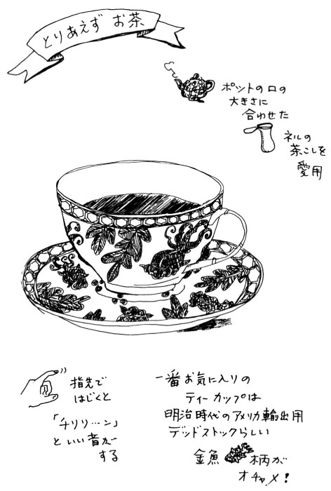
ドキドキできる自分を大切に
♪
♪
☆ときめくことは〝才能〟
「場馴れ」という言葉がある。「さまになる」とか「こなれている」というのもなかなかオツな言葉だ。
私自身、この手の言葉にあこがれている。そこにそうしていることが、ごくおさまりが良くて、寛いでいるのに華がある。このポジションこそ私の手に入れたいものだ。
今でも完全には克服できていないけれど、以前は今以上に緊張しやすい体質だった。もともといかり肩なうえにいつも肩に力が入っていた。だから当然のこと男の子にはもてなかった。男の子は、実は女の子以上に小心者なので、断られることを極度に恐れるあまり、つい話しかけやすそうな子に声をかけてしまうのだ。特に美人じゃないのにもてる子に共通しているのは、この話しかけやすそうな緊張しないタイプだということだ。
若い頃は、この簡単な心理に気づかず、ひたすら自分に魅力がないせいだと落ち込んでいた。魅力よりなによりそのくらいの年の男の子は、楽にコミュニケーションがとれそうな女の子の雰囲気に助けられて、ようやくお茶や映画に誘うということができるわけで、本当に好きと思われているのと誘われるというのは、やや次元の違うことだったのだ。
あの頃それがわかっていればなあ......なんて今さらのように思わなくもないが、わかっていたとしてもやっぱり私はもてなかったろうと思う。そのくらいゴチゴチの自意識のかたまりだった。おかげでほんの時たま、デートに誘われたりすると、あまりにドキドキしてかえってぶっきらぼうになって「なに怒ってるんだ」なんて聞かれてしまったりしたものだった。
さて私と同様、あまりリラックスできず、無器用で、気楽な恋愛には恵まれそうもないタイプの人を対象にして話を進めたい。これは言い換えれば先に小さいお得を得ようとしなかった人向けの話ということだ。
緊張してしまうのは、それだけ志が高く真剣で、そのうえ敏感な人でもある証拠。けっこう周囲の状況もよく見えているし、人の言葉のちょっとしたニュアンスも嗅ぎ分けることができる。だから傷つきやすく、時に臆病になってしまうこともある。どれもマイナスな要因のように思えるが、実はこれこそ夢をかなえる大切なファクターと言えそう。
すぐドキドキする、ドキドキする機会が多い。これってすごく幸せなことかもしれない。いくらまわりから「あなたって華やかでドラマチックね」とうらやましがられても、本人が無感動でなにもときめかなかったらそれまでのこと。そう考えると、ドキドキできるって、ひとつの才能かもしれないと思える。好きなことや大切なことに敏感だからこそドキドキできる。今日からそんなふうに発想を変えてみたい。
今日二回ドキドキしたら、二つの好きなことのそばに寄れたということ。そんな毎日のたくさんのドキドキの中には、きっとあなたの「いちばん好きなこと」だってちゃんと混ざっているはず。ドキドキはやる胸をしっかり抱えて、がんばってみることに決める。自分らしいやり方でドキドキとうまく付き合えるようになったら、また一歩前進だ。だから、ドキドキすることをやめなくては、と思う必要はまったくない。
☆いつかきっと「なりたい自分」になる
緊張しやすい人がちゃんと大人になるということは、ドキドキを「よく来たね」と迎えて、自分が編み出した方法で乗り越えるということ。
たとえばラッキー小物を持つ。以前に友達の紹介で初めて会った人と、すごく楽しくうまくいった時、持っていた白い麻のハンカチ。今日はビシッと決めたいというそんな日には、バッグに入れておく。
あるいは、自分へのご褒美を用意しておく。ドキドキしてもちゃんとがんばれたら、帰りにおいしい紅茶とチョコレートシフォンパイをおごる。前から買おうか迷っていた可愛いハートがついたリングをご褒美にしてもいい。ちゃんとリボンをかけてもらって、大切に持ち帰る。そして次のドキドキイベントの時には、このふっくらした五ミリほどのシルバーのハートが、ラッキー小物になってくれるはず。
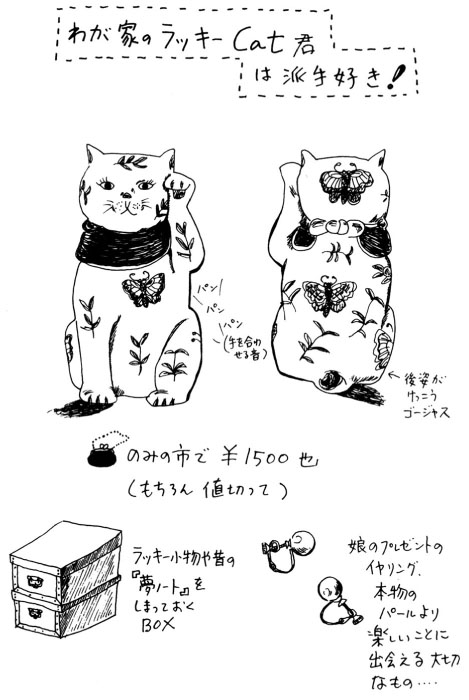
そうやって少しずつ「なりたい自分」に近づき、お気に入りの仲間も増やしていく。自分を励まし、自分を磨き、きっと〝さまになる〟〝佇 んでいるだけで華のある〟そんな女性になれることを信じて楽しく張り合いのある毎日を過ごしたい。
こんなふうに、いつも意識して楽天的でいようとすることは、生まれつきの楽天家の人が見たら「ハハハなんでそんなこと、意識してやってるわけ」と笑っちゃうくらいのことなのだろうと思う。
はっきり言って私は小心で怖がりだ。テレビのニュースで大惨事の映像が延々と流されているところで「うーん、この牛のたたきはうまい」などとリラックスできる人とは所詮、長くつきあえる相手じゃないなと思う。そして基本的には内向性だ。だから時に人と会うことが億劫にもなるし、大人になってもひとりで本を読んだり、お絵描きをしているような生活が体質に合っているのだろう。
これで外見的に暗かったら、友達は誰も寄ってこないにちがいない。だから意識して明るく、元気に楽天的に、と自分に言い聞かせるのだ。ひとりでいるのがいくら好きでも、ちょっとした時間にお茶を飲む友達も、映画を観に行く相手もいないのでは寂しい。
本来、軽く調子よく生きられないタイプの人のほうが誠実だし、努力も惜しまない。人生「損して得取れ」だ。自分のもともとの性格は充分いとおしんでやりつつ、少しずつ組織を補強していこう。
そう、私は私という組織、企業のリーダーなのだ。意識的楽天主義のもと、『夢がかなうカンパニー』の営業成績をアップさせていこう。
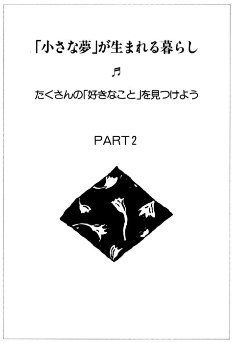
「好きなこと」をもう一度見つけたい
♪
♪
☆「好き」の気持ちは宝物
大人になったら、好き嫌いで物事を判断してはいけないのだと、長い間思い込んでいた。だから大人になるっていうことは、胸ときめくキラキラしたものから遠ざかってしまうこと。思春期の頃はそんなふうに空しく感じたものだった。好き嫌いの激しかった当時の私はいろいろな場面で、それを指摘されることも多かったのだろうと思う。
中学生くらいになると、誰しも「こうありたい自分」と「今の自分」のギャップに悩むようになる。現実という言葉の意味もそれとなくわかってくるし、なにしろもう自分は小学生じゃないんだから、子供っぽいことは卒業だなどと、妙に醒めたふうを装ったりもする。ドロ遊びで自慢のお料理を作っていたことや、マンガの主人公になりきって秘密の呪文を唱えていたことや、大切なお人形から心理的に一番遠ざかるのがこの時期だ。なんて幼稚な、なんて恥ずかしい......。まっ、こうやって児童から生徒へと、一応順調に脱皮していくわけだから、それはそれでいい。
そしてこの時期、好きとか嫌いの対象と言えば、自然と異性のことに集中してくる。これはなんといっても、親や周りの大人に知られたくない恥ずかしいことだから、「好き」という言葉自体、しだいにオープンにするのをためらうようになっていく。なんでも「好き」と無邪気に言えた平和な季節は終わってしまったかのようだ。
自分にそんなことを言う資格があるのか、好きになるに相応 しい人間なのか。コンプレックスや緊張や内向性に足を取られたような格好で「好き」という単語を奥へ奥へと閉じ込めてしまう。こんなふうな経過のなかでだんだんと「好きだったこと」を、恥ずかしいものとして固定させ、押入れの隅にしまいこんだままにしてしまうのだ。
幼い頃、その時に応じて好きだったことは、それがたとえ指しゃぶりやしっぽの取れかかった熊さんでも、幼稚園のおゆうぎだったにしてもごく大切な事実なのだ。全然恥ずかしいことではないし、ましてや邪険に扱っていいはずがない。それが人と同じようなものでも違っていても、どちらにしても自分が「好き」になったという事実を、もう少し大切にしたいものだ。
目先のことに右往左往しているうちに、そういう「好き」はどんどん風化していく。大人になるにつれて「好きなこと」と「今していること」の距離はますます離れていくかのようだ。なんでも好きなことができるのは責任のない子供だけ。大人にはしがらみや義理や建て前というものがあってね。でも、そんなことに縛られることが本当に大人になるということなのだろうか。そうだとしたらずいぶん情けない。だからかつての私のように、大人になるのを歓迎できない若者が存在することになるのだ。でもかつての私はともかく、幸い今の私はそうは思っていない。
大人になった今こそ、「いちばん好きなこと」をもう一度見つけ出すべきなのだ、と言い切ることができる。ゴチャゴチャと生意気を言っていたあの頃より、今のほうがずっと見つけやすいような気もする。
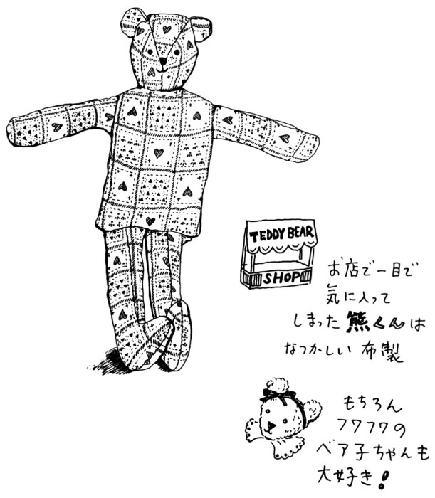
☆「右にサイフ、左にハート」
私は十五年の教師生活を経て、「好き」を大切にする気持ちを取り戻せたと思っている。でも、その十五年間の間には「好きなこと」をしょっちゅう見失っていた。言い方を変えれば、その見失っていた時は好きなことがよく見えていないわけだから、好きなことがあることさえ忘れてしまう。
忘れているだけなのに、好きなことがないと思い込んでしまっている時期だってあった。そんな時は何だか全身に倦怠感があって、生活全体がどんよりとグレーがかっていたようだった。どちらかといえば「好きなこと」はあるけれどできない、どうしたものかと悩み、思案にくれていた時より、好きなことがないと思い込んで漠然と生きていた時のほうが、つらく悲惨だった。
子供時代を過ぎてもなお残る「好き」の代表選手である恋愛感情。これとて同じことだ。振り向いてもらえない、相手の心がわからない......そんなつらさも確かに存在する。
でも、人を好きになった瞬間、今までも見ていたはずの鉢植えの花の色が、彼のよく着ているセーターと同じ煙ったようなブルーだと気づく。いつも耳にしていた曲なのに、初めて聞いたように新鮮なワンフレーズ、感動がズンと来る。人は好きだと思う対象があるだけで、暮らしが何倍ものこまやかさと密度を持つようになる。好きな人のいない気の抜けたコーラ状態より、どのくらい幸せかと思う。
とにかく「好き」があることは、たとえ現在のところその「好き」を手に入れていなくても、ないより百倍以上いい。
『私の部屋のポプリ』には深尾須磨子さんのこんな言葉が紹介されている。
「右にサイフ、左にハート」
これこそ大人の女性の理想の生き方。
「好き」の気持ちを取り戻す鍵は、毎日の暮らしの中にたくさんひそんでいる。みずみずしくしなやかに生きるために、なにより先に自分だけの「好き」を見つけよう。
張りのある毎日を生む「テーマ」
♪
♪
☆〝センス〟を発揮できる暮らし方
私は内向的な性格のくせに根っからの自慢屋という側面も持っている。小学校時代は足は遅いし計算も遅いのに、その当時のトレンディな文房具のチェックだけは早かった。新しい匂いつきの消しゴムやキャラクター柄の鉛筆を仕入れた次の日は、学校へ向かう足取りが俄然軽いのだ。なんてったってみんなに見せびらかして自慢できるからだ。これと同じような行動が、いつの時代も私にとってすごく大切な生活の張り合いだった。
これは単に〝もの〟の自慢にとどまらず、それをチョイスした自分の〝センス〟の自慢であった。よく、お金持ちの子がするような、他の子が絶対手に入れることのできない高価なものや「パパの外国旅行のおみやげなの」的な、へたをすると嫉妬や憎しみを買いそうなものでなく「あっ、それかわいい。えっ、あそこのお店にあったの？ 帰りに買ってこっと」というレベルのものだから、けっして嫌われることはない。小心者の私のこと、その辺のぬかりはないのだ。
以来、センスというのは、私の暮らしていく上でのひとつの拠り所となっているようだ。美意識とか価値観となると、日々の暮らしの中ではちょっと重たいが、〝センス〟なる言葉、なかなかいい位置につけていると思う。
イラストレーターという職業が、私にとって魅力的だと思えるのはそこだ。センスを披露することができるステージなのだ。お店に行くたびいつも欲しくて、先週ようやく手に入れたばかりのテーブルクロスの柄を伝えることや、お気に入りのデディ・ベアのすこし褪せたミルクティーのような色を表現できることがうれしい。小学四年生の私が、ランドセルに入れた新しい筆箱をカチャカチャいわせながら学校まで走っていったような、そんな幸せな気分がよみがえってくる。
そして主婦としての私。やはり褒められたがりである。よく、主婦は評価されにくい職業である、と言われる。確かにそういう指摘は当たっている。多少、掃除の手抜きをしてもなにも言われないかわり、一日かけて磨きまくったところで、帰宅した途端、鞄をパッと落として「うーん、今日は家中が光り輝いている！」なんて感嘆符をつけてまで感動してくれる家族はいないだろう。多分、逆にその分、夕食が手抜きになったほうだけ皆様の関心を集める結果になったりして、どっと疲れが出るのが現実だ。
そして、その疲れの先にはオバタリアンの道が広がっている。
（あーあ、どうせいくらがんばったって、褒めてもらえないんだもーん）
もともとハッと人が振り返るような美人じゃないし、毎年いっこずつ年は確実に増えていく。だーれも私のことなんか注目しているわけじゃない。オオなんとネガティブな発言、褒められたがり女のがんばりも最早ここまでか。
夫は異性のパートナーである。これ、オバタリアンにならない「守り札」であり、今のところ、私の暮らしのテーマのひとつである。正直なところ、子供たちの父親としての認識のほうが大きいのは、我が家だけではないだろう。まあ、新婚の時のようなトキメキそのままは無理にしても、円熟したなりの異性としての付き合いを、時に意識することは大切な気がする（ここは若い人、軽く読み流してね）。
☆細切れの時間に「流れ」をつける
いずれにしても、ポイントは自分なりのテーマを持つということだ。自分で自分のプロデューサーになり、看板女優の自分を演出する。日々の暮らしに張りが出てくること請け合いだ。
今日のテーマは、今週のストーリーは、衣装は小道具は......。
女の人の生活は細切れになりやすい。親元にいる独身女性を除けば、夕方になれば晩御飯のことが気になるだろうし、トイレットペーパーの買い置きがなかったことやレンジの油よごれやたくさんの実用レベルの気が散ることを抱えて暮らしている。夢なんてお腹がいっぱいになるわけじゃないし、それより今しなくちゃならないことが山積している。
だからこそ、その隙間だけでもいいからオリジナルなテーマ曲を流してほしいのだ。仕事と仕事との間の十五分を今週のテーマ『ヘルシーな私』のために使う。おせんべをポリポリしつつペチャクチャ噂話の種をまくかわりに、窓を開けて背筋を伸ばし深呼吸をするのもいいだろうし、三杯目のコーヒーはやめにしてミネラルウォーターを飲む。「帰りにナチュラルハウスで有機栽培のトマトとキャベツを購入」とメモしておく。
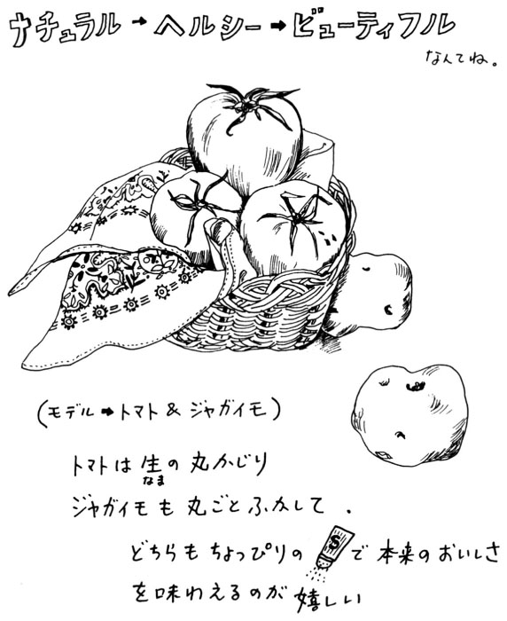
あるいはバスを待つ間、歩道を歩いて行く人の着こなしのポイントを探る。夜はクローゼットの整理をしたあと、録画しておいたファッション通信を見る。今日のテーマは『おしゃれのリサーチ』。
こんなふうにテーマを持って、意識的に行動していけば、一日が細切れのようでいて、実はサラサラと小さな流れができていることに気がつく。そしてこんな試みを楽しく続けていくことで、いずれ大きな流れになり、夢の大海につながっていくのだ。
別に急ぐことはない。時には寄り道したり、お茶したりしながらオリジナルなテーマに乗って素敵に暮らしてみよう。
自分の「テーマカラー」を見つけよう
♪
♪
☆幸せ気分は「好きな色」から生まれる
〝センスがいい〟というのは、色感がいいことが大きな位置を占めている、と私は思っている。最近、カラーコーディネイト講座がカルチャースクールやフィニシングスクール等で開講されているのは、とてもいいことだと思う。
ただし、あくまでもそれはひとつのアプローチの方法であり、その講義の内容にすべて従わなくてはいけないと考えるべきではないと思う。本来、センスはマニュアル化できないからこそ奥深く、素敵なものなのだから。
そして自分の〝テーマカラー〟を持つというのも、多くの講座で扱われるだろう。
その時、よく問題になるのが「似合う色」と「好きな色」が違うという場合だ。知り合いの女性でそういった講座を受けたあと、洋服ダンスの中からほとんどすべてのワードローブを処分してしまったという話を聞き、一瞬（ちょっと、それはないな）と思ったことがある。
そこまで今までの自分を否定しなくても充分センスは磨けるし、素敵になれる。そして私個人の意見を言えば、その講座でなんと言われようと「好きな色」を捨てるべきではないと思う。
確かに人から「これが似合う」と言われるのは、新鮮な体験ではある。なにしろ日本の男性のほとんどは奥様や恋人の着ているものに無頓着だし、たまに言葉を発すれば「そんな派手なもの着て」とかなんとか。蹴りのひとつも入れたくなるような有り様だ。だから確かに専門家から「あなたの色はこれ」と言われたら、うなずく気持ちもわかる。
でも本来、色ってそんなに単純なものじゃない。そんな簡単に人間を数パターンの色のグループに分けられるくらいなら、絵描きもファッションデザイナーもいらない。このところは、ずっと絵に関わってきた者として四倍の大きさの活字にしたいくらいの気持ちだ。
さて「好きな色」はなんで好きなんだろう、というあたりから考えてみたい。実際には、幼児期から一貫して「好きなのは赤」という人もいるだろうし、時間や気分によって変わる人までさまざまだ。服ならブラウン系のトーンで、インテリアはモノクローム、器は白地に紺がいい、などという人はすでにだいぶ先に進んでいると言えそう。
いずれにしても人は「好きな色」には〝気持ち良さ〟や〝幸福な気分〟を感じるのだと思う。気持ち良いというのも人によってそれぞれで、激しく強いものが快い人もいれば、穏やかなものに大きな安らぎを感じる人もいる。
好きなものの固有色イコール好きな色という場合は結構多い。海が好きだからマリンブルーが好き。スキーが得意だから雪景色を思わせる白が好き。苺ミルクのような甘いピンクとメロン色が好き、なんていう食いしん坊路線もありだ。
また、幸せな体験と直結したその色が好きになる場合もある。はじめて褒められた静物画が黄色いバラを描いたものだったことから鮮やかなクロームイエローが好きになった。彼からプロポーズされた時、もらった指輪のケースは淡いバイオレットのリボンで結ばれていた......。
これで、「似合う色」と言われなかっただけで「好きな色」のブラウスを処分するのは、まちがいだということがわかると思う。「好き」はとにかくその人の根幹に関わることなのだから、何より尊重しなくてはいけないのだ。それこそがテーマカラーなのだ。
☆好きな色を「似合う色」に変える工夫
とは言うものの、紫色御殿や黒ずくめを勧めているわけではない。色感の良さにはバランス感覚の良さという要素もある。好きな色を似合う色に――これこそが本当のカラーコーディネイトなのだ。
要は演出だ。赤が自分のテーマカラーだとする。上下まっかなスーツを着る百パーセントストレート派、セーターとソックスを赤にして、スカートは赤とモスグリーンのタータンチェック、というクリスマスっぽいタイプ、グレーのフラノのジャケットのポケットチーフを真紅のシルクにする。あるいは白のトレーナーにブリーチのジーンズ、衿元にちょっとだけ赤の入ったギンガムチェックのシャツがのぞいている。どのくらいの赤のバランスが今の自分らしいかを判断することが、その人の腕の見せ所である。
訓練次第で色感はいくらでも良くなる。たくさんの服が買えるならそれにこしたことはないが、もし普通の金銭感覚の持ち主なら、ここでまたもやスクラップブックの登場だ。まず赤がテーマカラーだったらタイトルは『赤のコーディネイトレッスン』とでも名付けよう。
雑誌から赤をうまく使っているファッションをピックアップしてみる。今までそういう目で見ていなかった時は気づかなかった、さまざまな組み合わせがあることにびっくりすると思う。（そうか、黒でトリミングすれば引き締まって見えるのか）（同じ赤でも光沢がある布とウールでは、こんなに印象が変わるのか）（小物に赤を持ってくるのはポイント高いな）とか、感じたことをちょっとメモしておくのも有効。
次はクローゼット編。自分の持っている赤いものをすべて並べてみる。
実は赤といっても紅は赤紫寄りの色だし、朱は橙色のほうに近い赤なのだ。この色味（色彩学では色相）の違いがわかってくるとグンと色に対する理解が深まる。あとは鮮やかさ（彩度）と明るさ（明度）を合わせて色の三要素となる。
派手と言われた場合は大抵彩度の高い、言い方を変えると絵の具のチューブから出したままのような混色してない状態の色のことが多い。ついで色味が反対の位置にある色同士の組み合わせ（反対色）の場合、赤なら緑、黄色は紫などの反対の色味の組み合わせは強く派手である。白や黒のような無彩色を合わせるとか、混ぜるとか（たとえば緑に黒を混ぜてモスグリーンぽくする。色味は変わらないが彩度も明度も低くなり、地味な色になる）の方法もあるし、面積を小さくすることで色の強さが抑えられる場合もある。
いずれにしても鏡の前であれこれやってみること。サイズが小さいわけでも流行遅れでもないのに滅多に袖を通さない服は、やはり他のものと組み合わせにくい色であることがわかってくるだろうし、次に買う時にはきっとこの色のレッスンが生きてくるはず。そしてそこにメイクが加わり表情がついて、動き出す。センスのいい素敵な女性の誕生だ。
☆室内も自分流コーディネイト
インテリアの場合は、より一層の慎重さが必要だ。日本に住む限り、スリーベッドルーム、ゲスト用のバスルームありなどという家には、そうはお目にかかれない。
私個人の意見では、好きな色を限りなく淡くした基本の色（例えば赤が好きならほんの少しピンクがかった白で壁を塗るとか、グリーンがテーマカラーなら窓枠のアクセントカラーにペパーミントグリーンを持ってくるとか）を決めて、それに木肌や床材の色味を合わせたりカーテンやクッション、ソファカバーなどのファブリックにテーマカラーを使ってアクセントにするなどの方針を立ててほしいと思う。布地なら思いきってお揃いのプリントにしても、飽きたら比較的簡単に他のイメージに変えることができるし、季節感も出しやすい。
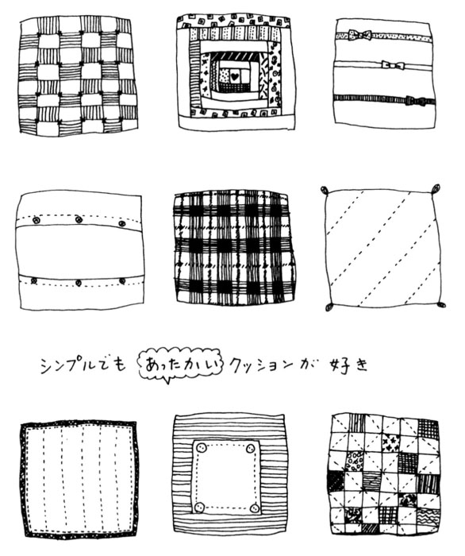
いずれにしてもあんまり頑張って色々な要素を盛り込み過ぎないことだ。趣味の手作りなどもコーナーを決めて、時々展示替えをするようにして。あまり盛りだくさんにせず、いくらか物足りないくらいに留めておいたほうがすっきりと広く感じられる。なにしろ読みかけの雑誌に脱ぎ散らかしたスリッパ、あるいは子供のオモチャや道具、それに住み手自身が相当インパクトの強い色彩のかたまりみたいなものなのだから。「箱はシンプルに」が今のところのポリシーだ。
きれいと感じられるものには、自ずとバランスのとれた色のハーモニーがある。毎日の暮らしの中でそれらを意識することこそ、生きたカラーコーディネイトのレッスンと言えるかもしれない。
花とグリーンで心を潤す
♪
♪
☆植物を愛でる「達人」
その男性は前を見ては「やあ、セイヨウハコヤナギがきれいに植樹されてますね」。ふとかがみこんで「うん、これはシリブカガシかな、いやマテバシイだな」。一緒に歩いていた私はなんのことやらわからず周りをキョロキョロ見回す。そう言えば前方にはポプラ並木が広がっていて、ふと見ると足もとにはドングリが落ちてはいる。
別にこれ、デート中の会話じゃない。実は、私が教員をしていた時の修学旅行中のある先生との会話。私はその先生のクラスの副担任ということで、旅行の引率をしていた。とにかく浮き世ばなれした初老の生物の先生で、生徒は『化石』扱いしていた。リンスはおろかシャンプーさえ知らず、いまだに石 鹼 ひとすじ。テレビはＮＨＫ教育以外は見たことがないというような方。でも、なんとなく憎めない名物先生のひとりだった。
翌日、法隆寺を訪ねた時のこと、山岸凉子作『日 出 処 の天子』の 戸 皇子 （聖徳太子）ファンである私ならびに数名の生徒は、ワクワクキャッキャッと戯 れながら夢殿に向かう道を歩いていた。そこで、かの先生を見かけた。ウットリと斜め前方を眺めている。そこには一本の地味な木があるだけだ。「うーん見事だ......。あの実のつき方、明らかに近畿地方の特色を表わしている」とつぶやきつつ、落ちた（私達にはよくわからない）実を大切そうにポケットに入れ、歩み去っていったのだ。人間、いろいろな感動のしかたがあるものだ、とそのシーンを目撃した数名は顔を見合わせたのだった。
ある時、おっとりとしたその先生が、猛烈に怒ったことがあった。教頭が学校中に除草剤を撒いて雑草を完全退治し、意気揚々とひきあげてきたのだ。もちろん、花壇や植え込みは無事である。しかし、その先生が授業のために敢えて自然のままにしておいた一画は、丸坊主にされてしまったのだ。猛然と教頭に抗議したあと、職員室の自分の椅子に座り、隣の席の私にちょっと悲しそうにこう言った。「中山さん、雑草っていう名の植物はないんだよ。どれにもみんなちゃんとした名前がある」。
私は自慢じゃないが、植物の名前を憶えられない人間だ。木にしても松、杉、栗などのごく一般的な樹木をごく大ざっぱに呼べるだけだし、花屋さんに行っても「そこのピンクのバラの右隣の白い花、十本ください」なんていう情けない買い方をしていた。そんな私だが、ある時ふとあの生物の先生の言葉を思い出した。「名前のない植物はない、どれにも立派な名があるし、せめて俗称でもいいから名前で呼んでほしいんだよ」。
以来、努めて「そのカスミソウの隣にある青い花はなんて言うんですか」と聞いてから買うようにしている。私のことだから、またすぐに忘れてしまう場合もあるけれど、それでも以前より花と親密になってきたような気がする。
☆本物のグリーンで空気が変わる
さて、そんな私にとって、東京での限られた空間の中でいかに私らしく居心地のいい住まいにするか、というのは今のところ大きなテーマのひとつだ。借家暮らしだから確かに制約は多い。コンクリートの打ちっぱなしの外観と収納場所が多いことが気に入って住むことに決めた家だが、玄関前の植え込みと屋上にプランターが置いてあったということも、大きな決め手になった。
この家のインテリアを考えていく上で、ひとつだけはっきり決めたことがあった。けっして花柄プリントを持ち込まないこと、である。
花柄にもいろいろあって、イギリス風のクラッシックなものからモダンなデザインのものまで百花繚乱だ。ひとつひとつのプリントはなるほど美しい。でも、それぞれの花柄がバラバラな主張をすると、収拾がつかなくなる。天井が高くて最低でも十以上の部屋があるお屋敷ならともかく、相当こじんまりした住居に和もの洋もの取り混ぜての生活小物。それらに花柄が入ってくると、ますます狭くちらかった印象になる、という消極的美意識から生じた決定事項なのだ。
基本的に実際は少しでもボリュームを抑えるために無地のロールカーテンにした。すでに敷きつめられていたカーペットがグレーだからマットやスリッパ、くずかごもグレーに統一した。タオル類も基本は白かグレーの無地か、その二色のストライプにした。キッチンも幸い白いタイル貼りだったのでステンレスの調理用品に白と少々のブルーをポイントカラーにした。
そんなわけで狭いながらもなかなかすっきりした清潔な空間になった。が、どこかさみしい気がしてならないのだ。あまりにも整然としているし、なんとなく寛げない。そこに夫の友人からの引っ越し祝いということで、ひと鉢の観葉植物が届いた。わたしのかつての生徒からはカゴ盛りの花が送られてきた。すっかり空気が柔らかくなった。テーブルに果物を飾る、これもいい。
ようやく我が家らしいインテリアが完成。〝花はプリントされたものでなく本物が一番〟というのが私のポリシーだ。グリーンもそう、写真より絵より生きたグリーンがうれしい。ほんとはこの上ペットがいれば、なおのこと生き生きと空気が動いてくれるが、これはしばらく我慢しなくちゃね。
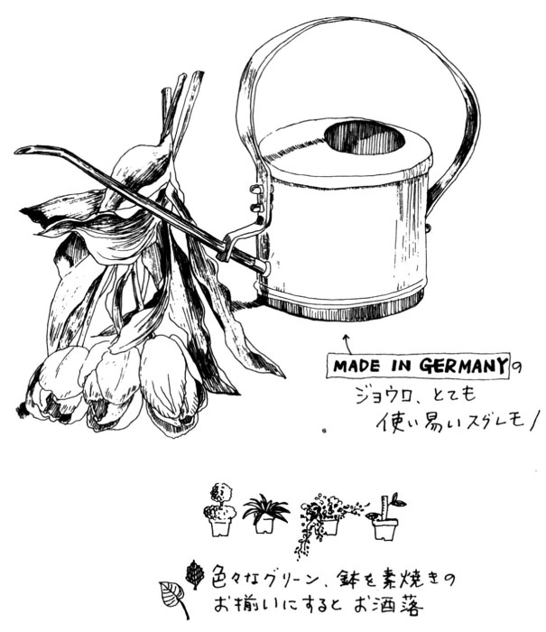
☆心が乾いたら〝お手入れタイム〟
そんなことで、スーパーの帰りに週に一度は花屋さんに寄ることが習慣になった。青山は花屋さんが多い。場所柄か、すごくお洒落。ちょっと高価すぎるというお店もあるが、そういうお店はアレンジのしかたやめずらしい花のお勉強ということで、ちょくちょく覗いてごーくたまに買う。普段はスーパーの近くのリーズナブルな値段のお店へ。夕方になるとバケツにびっしりのバラが千円なんていうこともある。やや開き加減ではあるけれど、三十本近いバラが消費税込みの千円、はうれしい。
冷凍庫に入れなくてはいけないものがあっても、まず花を活ける。といっても自己流の投げ入れだし、ゴージャスな花瓶も持っていない。でも、とっても豊かな気分になる。あまり花の種類をたくさんにしないで主役をはっきりさせるのが私流。
ワープロに向かう時間があまり長くなると、自分が乾いてくるのがわかる。まず、喉の渇きを癒すべくコーヒーメーカーを仕掛け、ポコポコとコーヒーができてくるのを横目に小さめなジョウロに水を汲む。
最初はキッチンのアンスリウムからはじまり、リビング、そして玄関へ回る。そのままジョウロを置いてサンダルをつっかけドアを開ける。階段わきには水道があるので幾鉢かのアジアンタムやオリヅルランなどのグリーンに水を。すると私まで気持ちが潤ってくる。
時には小さめの木バサミで、イヌツゲの刈り込みをしたりもする。
部屋に戻るとコーヒーのいい香り。そして透明なガラスの花器の中ですっきり背筋を伸ばしているストックたち。たったひとりのこんな時間、そばに花やグリーンがあるだけで心が柔らかくしっとりしてくる。
「自分」を取り戻すコーナー作り
♪
♪
☆夢を育てるための〝基地〟
「イラストレーターとかエッセイストには、どんな人が向いていると思いますか？」
「そうですねえ、ひとりで机に向かっているのが好きなことがまず一番かな」
これは以前、雑誌のインタビューで聞かれたことと、それについての私の答え。昔から知っている友達は「ようやく希望通りイラストレーターになって、華やかな生活で良かったじゃない」なんて言ってくれるけれど、職業に華やかさを求めるなら、イラストレーターじゃないほうがいいよ、などと思う毎日だ。
ある意味では女子高の先生のほうがずっと派手だったな、と思えるほど地味な日常生活を送っている。なにしろ机の前にいる時間が多い。あんなに勉強が嫌いだった私なのに、なんでこの年になってこんなに机の前で真剣な顔をしているんだろう......とひとりつぶやいている。
机の上に、まずは打ち合わせした時のイラストの資料やレイアウト用紙を広げ、ラフスケッチをする。場合によってはこのラフの段階でコピーしたものを、机のすぐ前にあるファックスで出版社に送ることもある。まだしばらくは送り先の担当者からのオーケーの電話はこないだろうから、下書きをちょっと片づけてまたすぐに机に向かう。
その間に千二百字のエッセイのほうに取りかかる。テーマは「夫と妻のコミュニケーション」。
四十字を十行くらいワープロで打ったところで、一回手を休めて読み直してみる。なにしろ最初が肝心だ。ここでモタモタとくどい文章だな、と感じた時はひと休み。またパラパラと資料を拾い読みしたり、近くにある雑誌を開いてみたり。時には三日前から書かなきゃと思っていた友達への葉書を書いたりする。文章が葉書の半分のところで詰まってしまったので、手もとにあった色鉛筆でちょこっとハートのリースを描いて仕上がり。こんな時は（あーら、絵心があるって便利）なんて心の中で軽口をたたいてみる。
なんとなくノリが悪かったのが、このあたりで調子に乗ってくる。ここいら辺までで、すでに二時間くらい机の前にいることになる。チャイムが鳴る。多分バイク便のお兄さんだろう。夫から預かっている原稿を渡す。またもや机に戻る。仮タイトルだけを残し、さっきのクドクドしい四百字を全文削除して再び打ち始める。こんなシーンが、多少のバリエーションはあるもののずっと続くのが、この商売の現実だ。これは好きじゃなくちゃ退屈だろうと、ひとごとのように思う。そのくらい地味なんだもん。
おっと、愚痴を言おうと思ってたわけじゃなかった。大人になっても、ものを考えるのに机って有効だ、という〝自分を取り戻すコーナー〟の話がしたかったのだ。
もちろん洗濯機の前でも、食器を洗いながらキッチンにて、でもものは考えられる。家計簿をつけるのなら夕食の後片づけをすませてからテーブルの上ですればいい。なにしろ子供たちだってちゃんとした学習机があるのに、わざわざこのテーブルに宿題持ってきたりするんだから。そう、家計簿や漢字書き取りの宿題って、なぜか食卓やこたつが合う。多少とも「義務感」から解放されるような気がするのかな。
子供たちにとっても、特に低学年の段階では無用の長物と化しているように見える学習机だが、実は徐々になくてはならないものになるのだ。まず親に見られたくないもの（女の子なら交換日記とか手紙。男女ともに共通するのは好きな子の写真。男の子ならちょっとエッチっぽい雑誌とか）の隠し場所としては学習机の引き出しが一番だろうと思う。
だから、それは勉強のためというよりは、勉強するふりをして自分の好きなことをしたり考えたりするための「基地」として不可欠なのだ。私がイラストレーターになりたいと決められたのは、テスト勉強しているふりしてノートに夢中でイラストもどきのものを描きまくれた学習机の存在があったからだろうと、今でも思っている。
☆ひそやかに「自分」を楽しむ時間
大人の女性にも、その基地を持ってほしいと思う。それはどんなに小さくてもいいからものが書ける『机』的なものが望ましい。そしてその前ではオフィシャルな役割としての自分でなく、固有名詞の自分に戻るのだ。
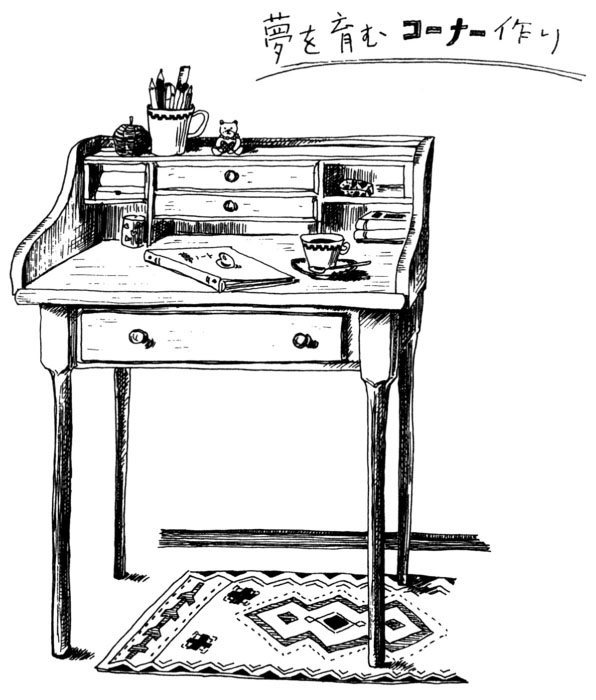
だから今までどおり家計簿はテーブルでつければいい。こんなに母は、妻はやりくりしているのよ、というデモンストレーションの意味でもドンと皆の前にさらしたほうがいいかもしれない。でも、自分だけのコーナーではプライベートの、自分としての、ひそやかな、といった類のことをしてほしい。
「えーっ、私、家族に知られたら困るようなやましいこと、絶対ありません！」なんていう人もいるかもしれない。そういう正しさを否定はしないものの、なんか寂しい気がする。
「秘密ってやましいことなの？」と聞き返したくなる。「絶対、ない」なんて、大人なのに気の毒だと思う。
結婚していても、会社に勤めていても、子供がいても、役割以外の自分が大切だ。忙しくしていないと不安だったり、いつも長電話をしてしまったりする人は、多分自分を見つめる目が厳しいんだと思う。自分を責めてしまうから見たくない、他の人との関係に精力を使い果たして自分自身から目をそらす。もっと自分に甘くなればいいのに、と思う。ジャンジャン褒めまくり、いい気持ちにしてあげればいいのに、とも思う。
私の日記など、その典型だ。ものすごい自画自賛の嵐、とっても人様にはお見せできない代物だ。
仕事？ バッチリ、なんてったってこんなにセンスのいいイラスト、気のきいたエッセイ書ける人、そうはいないよ。うん、年よりグッと若く見えるしさ、今日も「えっそんな大きな息子さんいるんですか」って驚かれたし、フフフ、かなんか書いてる。
たまたまファックスを送ろうと、上の仕事場から夫が下りてくる。（オットやばいぜ、仕事のふりして、と）なんて感じ。こんな他愛のないことでもすごく元気が出る。夫のほうは（なにコイツひとりでうすら笑いなんかして）という表情。ちょっぴり照れくさい妻は、急に営業スマイルになって「おいしい和菓子あるけど、お茶にしません？」なんてね。
ポプリを飾ったり、きれいなシールを集めたり、なぜかすごーく美人にとれてる写真を引き出しにしまっておいたり、そんなことで大人の女だって幸せ気分になれる。あこがれや夢や好きなこと、大人の現実生活の中には肩にくいこむ重いものもあるからこそ、軽やかに明るく屈託なく楽しむコーナー。押入の半分を改造しても楽しいし、ドレッサーを鏡つきデスクとしてうまく利用してもいい。
そしてそこで『夢ノート』作りもぜひ実行してほしいな、と思う。
さりげない手紙でハートを伝える
♪
♪
☆郵便受けの音にウキウキ
好意の示し方を見ると、その人の人柄がわかる。体温が高いというか、ムワッと熱さが迫ってくるような押し出しの強い人の好意というのは、時としてこちらを圧迫するものだ。
こちら側に体力や余裕がある時は、実にゴージャスでありがたいものだ。高価なもの、めずらしいプレゼントをもらって全然うれしくないという人はいないだろうし、強烈な称賛や歓待、ご馳走も大好き。ただし、なんらかの形でそれに見合うだけのものが相手に与えられる、お返しできるとわかっている場合だけだ。
プレゼントをもらう喜びの域を脱して、相手に対して（この人はなんらかの理由で私より優位に立ちたがっているのだろう）なんて感じてしまった時は、重荷感と自己嫌悪に同時に襲われる。これでは相手の好意と思われるものに申し訳が立たない。ことほどさように、人に好意を表わすというのにもバランス感覚が要求される。
手紙もある種のプレゼントだ。外出先から戻ってきた時には、反射的に郵便受けの中を覗いてしまう。手紙があると、うれしくて鍵を開けるのももどかしく、荷物もそのままに封を切る。それが、ＤＭやガスの検針の紙しか入っていない時はがっかりだし、それさえなくて郵便受けの底が見えた時など、本当に哀しくなってしまう。しばらく風邪で寝ていた時などもそう。なんとなく治りかけてはいるみたいだし、退屈な気もしてきた。けれど体の芯がまだだるいなんていう時は、そろそろ人間社会に復帰しようかどうかと悩むところだ。
こんな時、電話の音ではちょっと刺激が強い。玄関の近くでコトッと音がする、サンダルをつっかけると裸足のつま先にビニールの冷たさが快い。ドアを開け、郵便受けを覗く。薄いグリーンのマーブル模様の封筒がひとつ。こんなにうれしいプレゼントはない。
☆時には立ち止まって、心を込めて
かつて私は、相当の手紙魔だった。ちょっとの暇を見つけては、手紙を書いていた。すぐに返事が欲しくて返信用の切手や葉書まで同封したこともあった。自然、私のもとへ届く手紙も多かった。返事が届くと、うれしくてすぐまたその返事を書く。会って話すほどのことでもないな、と思うものの、手紙だとつい饒 舌 になるのだった。そんな中で、少しずつ雑誌や本の仕事が増え、手紙を書くことが減っていった。イラストレーションや文章を書くことは、特定の誰かではないが〝読んでくれている人たち〟への手紙のようなものだからかもしれない。
そんな私に、会ったことのない人からの手紙が届くこともある。出版社を経由して本の感想などが送られてくるのだ。これはなによりうれしい手紙のひとつだ。誰に向けて書いたのか定かではないものの、確かにあの時、私は手紙を書いたのだ。その手紙がちゃんと着き、その返事が届いたようで心の中がパーッと温かくなる。
機会を作ってまた手紙を書くようにしよう。懐かしく、ひとりひとりの顔を思い浮かべながら書く手紙。胸ときめかしつつ、まだ会ったことのない人へ書く手紙。もちろん、返事はうれしいけれど、かつての私のように返事をやみくもに期待して書くのでなく、さりげなく「たった今、あなたのことを思っていますよ、元気ですか？」とそれさえ伝わればいい手紙。そんなふんわりした香りのような手紙を書いてみたい。
しばらく素敵な便箋や封筒をお店で探すことさえしていなかった。日々の実用品を手に取るだけでなく、ライラック色のレターペーパーや綺麗な記念切手を手にする余裕を取り戻したい、そんなふうに思う。
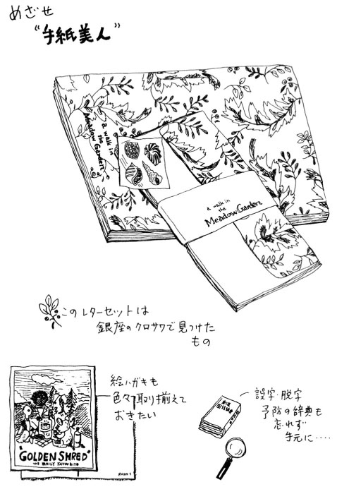
大きな夢をかなえるために歩き続けることと、時には道の途中で立ち止まって周りの景色を楽しめること。その両方を失いたくないと思う。さりげない手紙は、そんな小道に咲く可憐な花たちかもしれない。
子供の「ドキドキ」に自分も「ドキドキ」
♪
♪
☆〝無限大の発想〟を楽しむ
「おかあさーん、どうして目の上にブタがいるの？」
これ、今や我が家で一番背が大きくなった息子が幼稚園の時に発した質問。いまだに彼のヒット作のひとつとして我が家の歴史に残っている。
「あのねえ、マブタのことでしょ、それは目の蓋 ということなのよ」と答えつつも、目の上でブタ君がブヒブヒ笑っている姿がどうしても浮かんでしまい、母もブヒブヒと笑ってしまうのだった。
彼の名言は他にもあるが、文章を書く仕事が増えてきてからは、何度となくネタに使わせてもらった。よくニュースなどでも、「子供と動物はネタ切れの時の救世主」と呼ばれているらしいが、まさに子供の発想には脱帽。大人がやるとあざといだけだが、ほんとに子供は面白い。
そんな息子はどちらかというと、マイペースで競争というのをあまり好まない小学生だった。その彼がめずらしく競争心を出したエピソードがある。
二年生の授業参観の時、内容はカタカナの使い方。先生が「外国の地名もカタカナで言うね。では、たとえばどんなところがあるかな」。
「はーい、アメリカ」と元気のいい女の子が答える。
「そうだね、他には？ 橋本君」
「はい、アラスカです」
ここで我が息子が挙手。「おっ、中山君」。先生も期待の表情。息子は堂々と、「なんきょく！」。
その場にいたお母さんたちがウッと息を飲むのがわかった。でもその時の先生の対応は、さすがだった。
「そうか、南極か。うん、このテーマはなかなか難しいぞ。今日はお母さんたちも来ているし、時間もないから、明日いっしょにじっくり考えような」
私には、息子の思考回路がよくわかった。橋本君はいわゆるスポーツ万能の生徒で、クラスメートのあこがれの少年だ。その彼が「アラスカ」と言ったのだ。「アラスカ」よりももっと寒い所を先生に言って褒めてもらいたい。今日はお母さんも来ているんだ。その気持ちが「なんきょく」の一言に込められていたのだ。そして先生もそんな子供の気持ちをやんわり受けとめてくれた。メデタシ、メデタシである。
☆私の夢は私の夢、子供の夢は子供の夢
ところがこんな私が、母親業をつきつめてやっているある友人には、子供のことを適当におもしろがっている、ちょっと不謹慎な母親と映るらしい。私自身は私なりに真面目に取り組んでいるつもりなのだけれど、「あなた、余裕ありすぎよ。もっと人並みに子供のことでオロオロしたり真剣な顔したりしなさいよ」なんて言われる。
そんな私でも子供のテストの出来に一喜一憂するし、ＰＴＡの役員も一人の子につき一回というノルマはこなした。その役割は（風の噂に聞いていたようなこともなく）とても楽しかった。でも、道端でうちの子の担任、今年は当たりだとかはずれだとか囁きあったり、どこの塾が一番とか、何を食べさせると集中力がつくとか、クラスの誰さんちの何子ちゃんがなんとか賞をとったとか、偏差値が高いとか低いとかの情報を披露する私設ＰＴＡ集会に加わるつもりは毛頭なかった。だっておもしろくないんだもん。
基本的に、子供が学力優秀ということが母親の勲章だとか、受験難度の高い学校がいい学校で、我が子がそこに行けばすべてメデタシメデタシになる、などという甘い幻想を描いていないからかもしれない。学校ってそんなパラダイスでないことが、かつて学生だったことのある大人になんでわからないのだろうか。問題はそこで何を考え、体得できるかにかかっているのに、だ。ティファニーの包み紙で包装すれば、みんなゴールドになる、と信じているようなものだ。私よりそういう教育ママのほうがずっとロマンチストということかもしれない。
あるいは、私がいまだに自分のことに精一杯で、これからの自分にも何かと期待してしまう（母親道に外れた）タイプだからかもしれない。たとえばもしフルートに興味があるとして、その夢を娘に託して「親ががんばって高い月謝払ってやるんだからあなたもがんばるのよ！」と言うよりは、自分で習ってみようとするほうが自然だと思う人間だからだろう。
今は大人であり「人の親」である人も、それよりずっと前からみんな「人の子」でもあったわけだ。子の側から考えるとなにが嫌だと言って、
「あんたがいたせいでお母さんはあれもできなかった、これもできなかった。だけど自分の子供にはそんな思いはさせたくない」
と聞かされたり、好きでもないことを、
「おやじの俺が果たせなかった夢を、恵まれてるおまえこそ果たすんだ」
などと強制されることだろうと思う。親の愛情から発したことであっても、こんなに迷惑なことはない。あまり親子の関係をドロドロしたものに陥らせないようにするのも、ちゃんとした大人の役割のひとつだと思う。子供が幸せを感じるためには、何より親自身が（子供たちも含めた）現在の暮らしを充実させるのが一番。
☆「元気の素」が詰まった会話
おかげさまで私は、もっぱら子供たちに〝楽しませて〟もらっている。赤ちゃんの時もそれはそれは可愛かったけれど、やはり言葉を持ってからの子供たちとのコミュニケーションはまた格別だ。日々成長していく彼らとの会話に退屈することがない。
かといってなにか彼らの秘密を探ろうとかいう下心はない。親に知られたくないこともあるのが自然だし、今のところまだ彼らの健康管理はしているけれど、心まで管理しようとは思っていないからだ。年の離れたごくごく親しい人間とのおしゃべりを楽しんで、若さや元気を貰っているという感じかな。
大人がする先生の（なにか道徳の香りで悪意をカモフラージュしているような）噂話に参加するのは後味が悪いからパスだけれど、子供の側から見た先生情報にはすごく興味がある。子供たちに絶大な人気があるＡ先生の秘密がついに解き明かされるか、などと（もう教員でもないのに）ドキドキしたりする。変わったあだ名の由来、先生の口癖、趣味なんてのも楽しめる。
彼らの友達情報も好き。我が家に遊びに来るわけでもないのに、彼らとの会話の中で私のお気に入りのキャラクターの子ができていて、「お兄ちゃん、Ｂ君の最新情報なんかない？」なんて聞いたりする。
娘とは、もっぱら漫画の話。かつては生徒たちから貰っていた情報だが、今は娘やその友達が有力ルートになっている。このところのイチ押しは羅川真里茂作の『赤ちゃんと僕』だ。私など、あまりの感激に涙してしまったほどだ。
こんなふうに子供たちって本質を見抜くいい目を持っているなあ、とひたすら感心する母を見て、安心するのかうれしいのか「ねえ聞いて、聞いて」「うん、聞く聞く」の会話がけっこう弾むのだ。
税金対策で苦手な数字相手に頭を痛めた日、せっかく気合を入れたプレゼンテーションが没になった日、腰痛に悩まされている日、母は子供たちとの会話で元気を取り戻すのであった。
（今日もいろいろあったけど、まっ、こんなに大きく育ち、話し相手になってくれる子供たちがいるんだから、よし！ 明日もがんばるぞ）
「得意なこと」を増やす楽しみ
♪
♪
☆ひとりひとりの〝楽しいキッチン〟
主婦としての生活が長いからといって、みんな家事が得意とは限らない。大まかな傾向として、衣食住なんでも作るのが好きという人は、片づけるのがやや不得意のようだし、片づけ上手な人はどちらかというと、小麦粉や布の切れ端を飛び散らかすのはあまり好みじゃないようだ。たまに両方完璧な人と、両方とも全然「ダメなのよ」という人がいる。
私は強いて分類すると、片づけ好き手作りはちょっとね、グループに入る。そう言うと、必ず、意外......というリアクションが返ってくる。仕事柄、カントリーふうのパッチワークをほどこしたランチョンマットの絵やおいしそうなアップルタルトにロールビーフ、なんてキャプション入りのイラストレーションを描いたりしているから、「手作りはなんでもお得意なんでしょ」とよく聞かれるのだ。それだけならいいけれど、専門誌から手芸の仕事の依頼がきたりすることもあって焦る場面もしばしばだ。
基本的に私がイラストレーションに描いているのは（こんなのが作れたら素敵よね）という願望の世界であって、私の生活そのものではない。おいしい料理が作れることと、おいしそうな絵が描けることは、別個の才能なのだ、と言い訳しておこう。
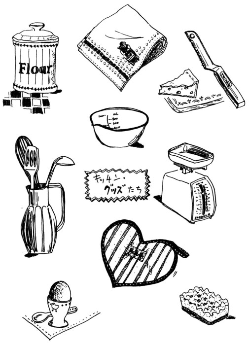
そうは言っても他に炊事を全般的に受け持ってくれる人がいなければ、私が責任者、誰に任命されたわけでもなく、一応そういうことになる。うちの場合、実はお料理そのもののセンスはまちがいなく夫のほうが上だ。おいしそうな絵とおいしいものの相関関係は否定したのに『絵描きは料理がうまい』という定説にうなずいたりしているんだから、いい加減な人間。
でも夫がキッチンに立っていると、なんとなく" 本格的〟という気配が漂って、圧倒的にプロの料理人は男性が多いことに納得がいくような気がするのだ。我が家でも特に歯切れの良さが活かされる料理は、夫にまかせたほうがおいしい。たとえば同じ火力で同じフライパンなのに、なぜか夫が作る中華風炒め物のほうが味にキレがあるのだ。魚のさばきかたも同様だ。
そんな家庭事情だが、日々の食料品の買い物はなんと言われても私のほうが受け持つ。これには予算というものがあるからだ。確かに上等な食材はおいしい、でも高い。私の主婦的感覚だと〝なにかに贅沢したら、あとは低価格で抑えて〟というセンサーが自動的に働くが、これを夫に要求するのはちょっと酷かな、と思うからだ。男女平等とかいうレベルでなく、資質の問題。うちではやや私のほうがしまりやというだけ。
ラッキーなことに我が家では、夫がキッチンに立つことに違和感を持っていないせいか、子供たちも料理に自然に興味を持ち始めた。息子はなんと言ってもスパゲティーが好物なので、器用にいろいろな組み合わせのスパゲティーに挑戦している。彼の作る『定番キノコとメンタイコのスパ』は、なかなかのものだ。娘はケーキやパイ、卵焼きなどを『ひとりでできるもん』のまいちゃんのノリで作るのが得意。複雑なケーキの時は、私が助手をつとめるが、なんでも雰囲気で作る兄貴とちがって、マニュアル通りきちんと計量するので破綻がない。この辺にも二人の性格の違いが出ていて興味深い。
炊事責任者としての今後の計画は、それぞれが得意料理のジャンルを充実させて、その日のメニューによってシェフを決め、より多彩な食生活を楽しむ、ということになっている。「おかあさんの得意料理は手巻き寿司と鍋物だよね」と言われても、けっしてめげることはない。
ひとりひとりが楽しくキッチンに立てる得意料理を持つ家族、これこそ私の夢の家族像なのだから。
☆「趣味はテニス」の夢かなって
またまた自慢にならないのだが、私の場合三十代になるまで趣味の欄に書けるものがなにもなかった。
まさか水彩画とか絵画鑑賞とは職業柄書けないし、読書というのもなんとなく趣味という範疇 に入れられない感じだった。ピアノは子供の頃に習ったこともあるけれど、楽譜を読むのがなにより嫌いで（ただし綺麗なドレスを着て、拍手と花束をもらえる発表会は好きだった）バイエルをドブ川に捨てた前科のある私だし、スポーツマンの父親にスキーに連れて行ってもらっても、ヒュッテのわきで雪ウサギを一心に作っている子だったことが災いして、大人になっても趣味空欄人間になってしまったのだ。
先生という、人にものを教える仕事をやめた時、最初に思ったことは、「なにか趣味欄に書けるスポーツを習ってみたい」ということだった。そしてできれば夫婦で楽しみたい。
そこで一大決心をしてテニススクールへ通い始めた。でもはっきり言って、そんなに期待はしていなかった。この年まで何一つスポーツをマスターできなかった人間だ。暇さえあればゴロゴロと漫画や雑誌を含めた読書ばかりしている生活から一転して、さわやかスポーツウーマンなんて無理無理。
それが、である。テニスにはまってしまったのだ。突然、若い女の子を好きになってしまった実直ひとすじ四十五年のおじさんや、青春取り戻しカラオケおばさんの心境が、痛いほどわかった。なにかアドレナリンというかドーパミンというか、訳のわからない成分が体中をかけめぐるのだ。やはり座業ひとすじ二十年の夫も若い子にはまらず、テニスにはまってくれたのは、幸いだった。「晴耕雨読」という理想的生活を表わす言葉があるが、「晴テニス雨イラスト」という生活を夫婦共々手に入れることができたのだ。
私の場合、群馬に住んでいた時は、多い時は週に四回か五回。雨の日もテニスウエアで仕事をしつつ、いつ雨があがってもコートに直行できるように待機の姿勢を崩さないという熱心さであった。いいお天気が続くと、連日のように留守番電話だけが働いている事務所という有り様だった。
ようやくそんな狂乱時代を抜けて、今は落ち着いてテニスを楽しんでいる。できればもうちょっとラケットを振り回したいところだが、とにかく「好きなスポーツはテニス」と言える自分がうれしい。そんな趣味のおかげで、『テニスジャーナル』からイラスト、エッセイの仕事の依頼がきて、プレス席で観戦したり、大ファンのマイケル・チャンと握手することができたり、などというおまけがつくこともある。
こんなふうに書くと、いかにも上手そうに聞こえるかもしれないが、まったくそんなことはない。あくまで私としての〝得意スポーツ〟なのだ。なんらかの大会を目指しているわけじゃないし、内輪のゲームで勝った負けたを楽しめればそれでいい。それだって、私にとっては大感激の体験なのだ。スポーツの後は、汗と一緒にネガティブな老廃物も流れて消えてしまう。その気持ちよさが私にとってはなによりのご褒美になっている。
好きなことを得意にする。大人だからこそ、そのプロセスを充分味わい、楽しみたい。
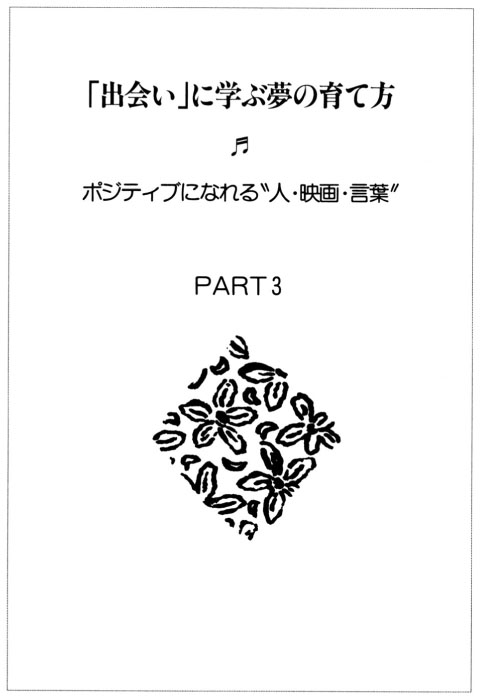
〝魅力のエッセンス〟を盗みたい
♪
♪
☆〝素敵〟がにじむ一瞬の出会い
この本の原稿を打つ合間に、大好きな『デュフィ展』を見に出かけた。渋谷のＢｕｎｋａｍｕｒａの地下にあるザ・ミュージアムは私のお気に入りの空間のひとつだ。ラウル・デュフィは一八七七年、フランスのル・アーブルに生まれた画家である。ノルマンディーの海、シャンゼリゼ劇場のオーケストラ、そしてパリ、エッフェル塔。館内にはサティのピアノ曲が流れ、その音のタッチと色彩のタッチに酔いしれたひとときだった。
東京に引っ越してきてうれしいのは、こんなふうにちょっとの時間に上等な時間を持てること。でも少々寂しいのは、こんな時に気軽に誘える友達が、まだ近くにほとんどいないこと。そんなわけで、デュフィの洒脱な線や、デュフィ・ブルーと言われる透明感のある青の美しさが身体の中にしみ込んでいくうれしさと、たった今、それを共有できる人のいない寂しさの間で揺れていた私だった。
この地下には中庭ふうの空間があり、パリのカフェを思わせるテーブルや椅子がレイアウトされている。めずらしくフレッシュジュースを飲みたい気がして、椅子のひとつに腰を下ろした。今、買ってきたばかりのパンフレットを開く。やっぱり本物の色や筆遣いを見た直後には、印刷物を見ても平板な印象、とページを閉じようとしたその時、パンフレットから漂ってくるインクの匂いの他に、かすかに柑橘系の香りを感じた。
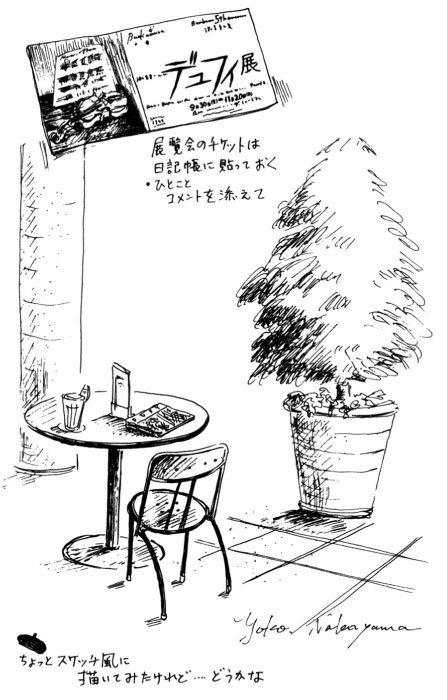
斜めうしろの席に、燃えるような赤毛の素敵な女性が座っていた。少し椅子を動かし、彼女を視野の中に入れる。ソニア・リキエルをぐっと若く、美人にしたような、ちょっと神秘的な印象の女性だった。
赤みのある髪に、深いグリーンのシルクのシャツ、臙 脂 に黒やグリーンの入ったペイズリーのスカーフを肩にかけ、黒のパンツに黒のブーツ。彼女はまちがいなくフランス人だと思う。デュフィ展で求めたらしい絵葉書に左手でさらさらとペンを走らせている。その様子は寛いでいて、なおかつエレガントだった。
彼女は多分、旅行者ではないだろう。でもたった今、ひとりアジアの大都会で自分の国を描いた展覧会を見てきた。私以上に、今の気持ちを共有したい人の不在を感じているだろうと思う。それなのに、ゆったりと微笑みさえ浮かべながらペンを滑らせている。
素敵な人だ、と心の底から思った。
たとえばこのように、いい展覧会を観に行く。すると、そこに絵のように素敵な人がいる。テニスに行く。私がレッスンに通っている神宮外苑テニスコートは、ウエアやシューズはすべて白と決められている。同じ白なのに、信じられないくらい素敵な着こなしの人が通り過ぎる。よく見ると、こんがりカフェオレ色の肌は見事に輝き、ストレートのロングヘアを束ねる金のシンプルなバレッタが唯一のアクセサリー。ポロシャツの衿の立て具合といい、縄編みのＶネックセーターとスコートのバランスといい、無理がなくてパーフェクト。
ある日、お洒落して歌舞伎座に行く。ロビーにはお雛様のようなノーブルな顔立ちの姉妹らしき二人連れ。多分日舞を習っているに違いない、二人とも若いのに慣れたしぐさの着物姿である。ジーッと視線を離さずにいると、見事としか言いようのない和服の彼女たちのお祖母様らしき女性のところに笑顔で歩みより、筋書きを渡している。
そしてまたある日、地下鉄の中、紺の制服に赤いランドセルを背負った女の子と顔を寄せ、楽しそうに話をしているお母さんの正面に座る。紺のセーターに千鳥格子のスカート、なんとカチューシャもスカートのより細かい千鳥格子のもの。紺のタイツにローファーを履いた脚はきちんと揃えられている。
ここまで例にあげた素敵な人たちとは、まったく面識もなければ、その後に見かけることもない。それなのに、こうしてビデオのように私の心のスクリーンに鮮やかに再生することができる。彼女たちの素敵のエッセンスは、たった一瞬の出会いなのに、私の中にポトリと落ち、そしてしみ込んでいく。そんな体験をしたくて、また街へ出る。
☆「優しさ」と「強さ」がおりなす魅力
そして、知り合いの女性たち。彼女たちの素敵のエッセンスは、もっともっとうれしい。だって、その秘密を尋ねたりじっくり観察したりできるから。私は、机に向かっている時以外の行動をすべて〝取材〟だと思うようにしている。基本的内気人間の私が「積極的な人」という評価を受けることもあるが、それはひとえに、この取材精神の賜物なのだ。
おもてなし上手の友人がいる。彼女はお料理教室も開いている女性だから、当然いつもおいしいものを食べさせてくれるのだが、その季節しか味わえない『サプライズ』つきのデザートの演出が見事なのだ。過不足なく、鮮やか。
秋のある日、食後のお茶を飲みつつおしゃべりをしていると、いつの間に仕掛けたのか、パイの焼けるいい匂いがしてくる。私たちのお茶の友に一枚、そしてどこのお店のアップルパイより、彼女の焼いたものが好きなうちの子供たちのお土産に一枚。一面に綺麗な葉っぱの模様がついているので、子供たちは「あっ、羽山さんのパイだ！」と大喜びするはずだ。
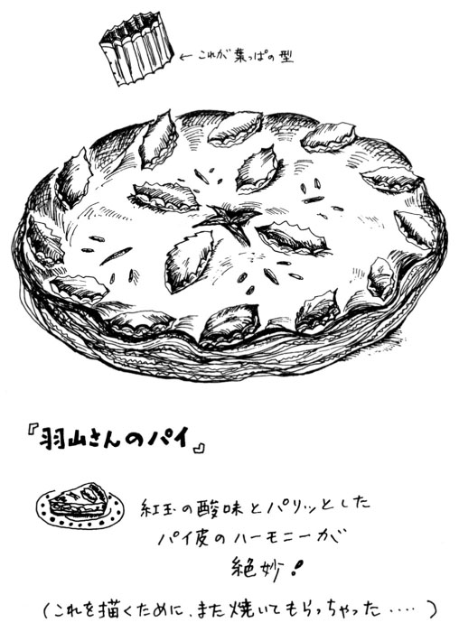
彼女のお料理への接し方には、素材との出会いの感激と作ることへの夢を感じる。それは彼女の家の庭にある木々の実りへの感激であったり、行きつけの果物屋さんの店頭にある紅玉との出会いであったりする。夜、手を黒くしながらも剝 いてくれたにちがいない丹波栗の和菓子の時は、塗りのお皿に乗り、可愛く松葉が飾られていた。忙しさを言い訳に、子供たちがファーストフードが好きなのをいいことに、手抜きが続いた我が家のおやつがしきりに悔やまれる。
お皿の片づけを手伝いながら、ちょっとだけお料理のコツを聞く。パイの皮はピッチリとラップで包んで冷凍しておく。リンゴの煮たものも密封容器に入れ、冷凍しておいたとのこと。それで私のようにオーブンの前でバタバタすることなく、焼きたてをジャストタイミングで出せたわけか......。時にはちらし寿司のご飯の炊きかたのコツだったり、中華の時の献立の立て方だったりすることもある。可愛いカフェカーテンのかかった彼女のキッチンにいる時だけは「お料理は素敵、お料理はクリエイティブ」と叫ぶ私なのだ。
Ｉ先生は二人のお嬢さんを持つ女医さんだ。うちの娘がお腹の中にいた時からお世話になっている。産婦人科の控室では、お腹の大きな女性以外はなんとなく肩身が狭い感じがするもの。でもＩ先生の診察日は、年配の方から若い女性までバラエティーに富んだ顔触れになる。
たとえば生理不順や更年期などというのは、大したことではない、病気とはいえない、などと片づけられてしまう類のことかもしれない。でも本人にしてみれば深刻な問題だ。サッパリしてて頼りになる先生の「大丈夫よ」の一言で心が軽くなり、帰る患者さんたちの表情は明るい。
かつては同じ町内に住んでいたので、セーラー服姿のお嬢さんをよく見掛けたものだ。久々に定期検診に行った私に「あの子も、もうしっかりお母さんになったのよ」とうれしそうに話してくれる白衣の先生は、シルバーの混じったソバージュヘアを無造作に束ね、耳元には金のピアス。鮮やかな赤い口元からは白い歯がこぼれていた。
＊
いつも夫がお世話になっている書店を経営するＭさんご夫妻に、私も初めてお会いすることになった時、夫はこう言った。
「何年か経ったら、あんな夫婦になりたいと思っているんだ」
私は内心、驚いた。それまで「ねえ、どんな夫婦が理想？」とか「どんなことを妻に求めるタイプ？」とかしつこく聞いても、一向にはっきりした答を言わなかった人だったから。そしてＭさんの奥さんにお目にかかった瞬間、わかったのだ。
それは天性の優しさとでも言うべきもの。言葉にするのはとてもむずかしいのだけれど、夫の言いたいことがサッと光が射すように理解できたのだ。本当に優しい人は、かまえずに相手を受け入れてくれる居心地の良さを感じさせる。そしてそれでも自分の色を失うことなく立っていられる強さも併せ持っているようだ。
おしゃべりを始めると、とっても気さくで楽しいご夫婦、そのうちご主人は快い酔いにまかせて、奥さん自慢をし始めた。変に謙遜するでもなくニコニコしながら気持ち良さそうにしゃべっているご主人を見守る表情に、私は「慈愛」という二文字を思い浮かべたものだった。
こうやって私が接することのできた女性たちに感じた『素敵』を並べていくと、相手を包み込むような優しさと、自分をしっかり持っている強さが造りだす『妙なる調べ』といったものが共通項としてあげられそうだ。
私の場合、完全に前者の含有量が足りないな、と自分で思う。でも、これからもいくらでも毎日の暮らしの中で、素敵な人達からエッセンスを貰うことができる。まだまだレッスンを積むことができる。そう考えると、とてもうれしい。
そしてもしかして、私だって誰かにとっての魅力のエッセンス提供者になれるかもしれない。そう考えて、またがんばろう。
いい映画はポジティブ人生のテキスト
♪
♪
☆「苦味」の生活、「砂糖菓子」としての映画
もともと活字寄りの生活をしている私だが、それでもあまりに難解なものや荒唐無稽なストーリー展開をもてあまし、パタリと本を閉じてしまうことがある。でも、それよりなにより苦手なのはバイオレンスやホラーものだ。とにかくこわがりで、残酷ものにはからきし弱い。その手の書棚のコーナーの前でさえ、ササーッと小走りに遠ざかってしまうほどだ。そのものずばりのタイトルや、けばけばしいカバーイラストを見たくないからだ。
ごく若い頃はもう少し、その手のものにも強かった。大学時代はキャーとか言いつつ、『エクソシスト』や『ドラキュラ』を観た帰り、グリンピースのスープやトマトジュースに挑戦なんていうアホなことをおもしろがったこともあったっけ。それが自分でもあの時から変わったんだよなあ......と思い当たるのは、最初のマタニティ時代。
とにかく可哀想なもの、恐ろしいもの、のすべてを拒否。こわいもの見たさなんてプルプルとんでもない！だった。それも理不尽な可哀想さ、幼い兄弟が留守番中、火事になり......なんて聞くだけで、もうボロボロ涙が止まらない。今は、その時ほどではないにしても、トマトジュースの頃にはけっして戻れない。
そんなわけで、映画大好き人間で『ぴあ』発刊、ビデオ普及以前から、最新作はもちろん、自主上映や往年の名作までを網羅していたあの頃のようなパワーは今の私にはない。映画が好きなことは今でも変わらないのだけれど、〝食べ物の嗜好が変わり、あまり刺激の強いもの、ゲテモノに近い珍味、ジャンクなものなどを消化しきれなくなった胃〟状態の映画好き、ということになってしまった。Ｂ級スプラッターものなんて、ちゃんと観れば十万円くれると言われても絶対に嫌だ。
今の私が好きな映画は、なんと言っても『観ている時には綺麗で楽しく、観た後に元気が出るもの』ということに尽きるだろう。話題作や問題作、実験映像的な作風とかが好きだった昔から考えると、「お客さん、そりゃないっすよ」といった感じだけれど、「映画に、何を求めようと自由だろ」と、堂々オバサンになった私は小生意気な昔の私に言い返す。
突然だが、田辺聖子さんの宝塚好きは有名だ。子供の頃に確か一回、大人になってからは建て直す前の宝塚劇場に一回（それも、修学旅行の引率で行ったもの）しか宝塚経験のない私に、なにをか評する資格があるとは思えないけれど、私は田辺聖子さんの気持ちがわかるような気がする。
『苦味 を少々』（集英社文庫）は、おせいさん哲学の入門書としても、まことに上手くまとめられている本だけれど、大人の生活って放っておいたら本当は〝苦味 〟ばかりになりかねないものなのだ。だからこそ、砂糖菓子のような宝塚のおいしさがわかるし、この甘味が必要なのだと思う。
今の私にとっての砂糖菓子は〝映画という娯楽〟なのだと思う。だから大学生の頃に映画通的に観ていた時のように「誰が何のテーマで撮ったものか」にこだわるより、単純に好きな誰かが出ているとか描写に夢が感じられそうか、というほうにポイントを置いている。ここからなにもかも栄養素を摂り入れようとしているわけではないから、ビタミンＢ的映画やカルシウム的映画を見逃していても、一向にさしつかえないわけだ。
☆〝マイベストワン〟との切ない再会
こんなふうに長い前置きになったのには、わけがある。最初はなんとなく私なりのいい映画ベストテンでも作ってみようかな、と思ったりもしたのだ。まず小学生時代を思い出すといちばん感激したのは『メリー・ポピンズ』だろう。ディズニーものはすべて好きだったけれど、なんと言っても、当時あのなんでも出てくる（ドラえもんの四次元ポケットのような）鞄がすごく欲しくてたまらなかったし、アニメと実写部分の見事な融合は何度観てもあきなかった。
中学生になると『ロミオとジュリエット』や『卒業』に感激したような気がする（この辺の記憶が一番あいまい）。それが高校生になるとなぜかもっぱらアラン・ドロンの映画専門だった。あまりの面食い路線が自分でも恥ずかしくて、絶対友達にバレないように隣町まで行ったりしたものだった。
そんなアラン・ドロン浸けの中で、一本だけ熱を出すほど感激した映画があった。タイトルは『さすらいの青春』。暗闇のなかに古びたお城のような建物が浮かび上がり、不思議な宴が開かれているちょっとシュールなシーン。打って変わって人々が船を漕ぐさわやかな印象派のようなシーン。なぜか異様に興奮して、その晩には熱が出てしまった。絶対もう一度観に行こうと思っていたのに、ようやく熱も下がって映画館の前に立つと、すでに違う映画に代わってしまっていたのだ。そんな経過で、これこそ私にとっての幻の名画と信じていた。
そのすぐ後東京に出て、フェリーニ、ヴィスコンティ、トリュフォー等を皮きりに映画三昧の時期が続き、たくさんのいい映画を観た。身体中に感動がしみ込んでいくような、一本一本の映画がドリンク剤のように効いた時期だった。それでも、熱を出すほどの経験はその後はなく、やはり『さすらいの青春』イズマイベストワンと固く信じていた。
それがこのレンタルビデオ時代に突入して、けっしてメジャーとは言えないその映画もビデオ化されているのがわかった。そして何軒かのお店を探し、ようやく見つけたのだ。なのに、とうの昔に大人になってしまった私には、どこに感激したのか思い出せないどころか、退屈で退屈で全編早送りしたいほどの駄作にしか思えなかったのだ。
ガッカリしたなんてものでなく、心底脱力してしまった。あの幻の名作と思い続けていた自分は一体なんだったんだろう。いいと思う映画を、評論家と呼ばれる人のように自信を持ってあげられないのは、あの時のショックがいまだに尾をひいているせいかもしれない。
結局、映画の感動で熱が出たのでなく、熱が出る寸前に観た映画だったから異常に高揚してしまったのだろう、ということだ。そうなると、いい映画と思っているもののなかにも、好きな彼と一緒に観たから感動。実はお腹一杯食べたあとだったから眠たく退屈っていう場合もある。まあ、それも含めて評価してもいいんだと今は思っているけれど。
☆「月が手を差し伸べる」女性――サブリナ
さて、そんなことであれこれ考えた末、『夢ノート』向きの映画をひとつだけ紹介することにした。
それは『麗しのサブリナ』だ。
私はオードリー・ヘプバーンの映画のなかでは、これが一番好き。『ローマの休日』や『マイフェアレディ』もいいけれど、サクセスストーリー＆ハッピーエンド好きの私としては、やっぱりサブリナだ。
シンデレラストーリーと言えば『マイフェアレディ』のほうがずっとふさわしい。彼女イライザは〝見いだされた〟のだから。彼女はサクセスしようとして花売りをしていたわけではない。
しかし、サブリナは違う。アメリカはロングアイランドのお屋敷、金魚の係までいる大富豪のララビー家お抱え運転手の娘がサブリナだ。彼女は木に登っては、そこから上流階級のパーティーの様子を覗き見ている。いつか、あの場所へ行くことを夢見ているのだ。
彼女の初恋の相手はララビー家の次男、放蕩息子のディビッド（ウィリアム・ホールデン）だ。そんな彼女の気持ちを知っている父親は、所詮かなわぬ恋をあきらめさせようと娘をパリの料理学校へ旅立たせる。「月に手を伸ばすな」ということだ。でもサブリナはディビッドのことが忘れられない。
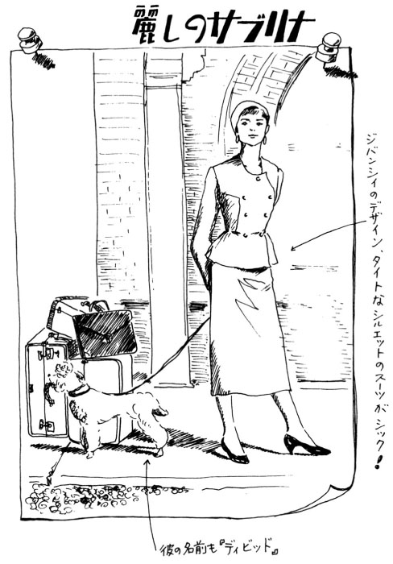
その料理学校で彼女を磨き、本当の人生を教えてくれる男性が現れる。料理学校のスフレの授業で隣だった七十四歳のフォンテネル男爵だ。彼は「まず、その馬のまねをよしなさい」と、彼女のいかにもアメリカ娘という野暮なポニーテールを指摘する。と言ってもこの映画の中で『マイフェアレディ』にヒギンズ教授のようなレディ製造スパルタ教育の描写があるわけではない（私のごひいきのこの男爵はたったワンシーンしか登場しない）。
サブリナは、もともと向上したいという意志を持った女の子なのだ。
二年が過ぎ、帰国することになったサブリナは父親に手紙を書く。
「お料理以外のもっと大切なこと、人生の過ごし方を学びました。生きがいのある生涯を送るには、傍観者でいてはいけない。人生は自分の手でつかむこと......」
グレンコープ駅に着いた彼女は、本当に「素敵」の一言。四十年前のスタイルのはずなのに、今のファッション雑誌のどのページより素敵。それでも見違えるほど美しくなった娘を見ても、娘のことを愛すればこそ父は「月に手はとどかん」と身分違いの恋をあきらめさせようとする。サブリナは微笑みながらこう言う。
「ちがうのよ。月が手を差し伸べるのよ」
好きだなあ、この台詞。現代日本に当てはめるなら松任谷由実作詞、というくらいポジティブだ。
あれこれあってサブリナは、兄のライナス（ハンフリー・ボガート）と結ばれることになるが、それも彼女のピュアな部分と同時に本物を見抜く眼力の強さあってこその選択だ。あっという間に彼女の志の高さが、いい奴なだけのディビッドを凌駕してしまうのだ。
モノクロの画面なのにこんなにもお洒落で、なおかつ女の子が夢をかなえるためのテキストとしてこれほど役に立つ映画は、そうはないと思う。すでに観たことのある人も、ぜひもう一度。観ていない人はこの本を読み終わったらすぐにビデオ屋さんに飛んで行ってほしいと思う。
日々の生活は自分を磨く『ステージ』だ。サブリナのように自分を磨き、月のほうから手を差し伸べてくる、そんな女性になりたいものだ。
「自慢友達」の嬉しい効用
♪
♪
☆〝幸せ自慢ができる喜び〟
私は、素敵な女性とは自分の中に「光源」を持っている人だと思う。デュフィ展で見かけた女性もそうだし、サブリナなどは全身が発光体のような感じだ。月のほうが引き寄せられて当然の女性なのだ。あいにく、そこまで光り輝くものを（今のところまだ）持ち合わせていない私たちも、少しずつでいいから内から輝ける自分を目指したい。
ところで、現代日本の風土の中では、男性が女性に讃美の視線を送ること、言葉で表現するなどということが定着していない、育っていないという事実がある。これは由々しきことだ。
私など、次の世代の男性である息子たちには〝優しさ〟もいいけれど、〝女性を上手に褒める技〟こそをぜひ磨いてほしいものだ、と思う。照れ屋のくせに、ちょっと気を許すと妙に馴れ馴れしかったりするオジサンたちには早く枯れてもらって、お嬢さんだけでなくマダムもグランママも上手に大切に扱えるジェントルマンたちが育ってくれることを願うばかりである。それもまあ、少しずつではあるけれど、事態は良くなっていると思うことにしておこう。
女同士の友達に求めることは、だからちょっと欲張りだ。私は、人に愚痴を言うことはほとんどない人間だけれど、自慢はしたいのだ。ただし、自分だけが自慢しまくりというのは空しい。ちょうどいい具合にバランスを取りつつ、の自慢友達。これは貴重な存在だ。
なにしろ、相手の幸せや自慢を喜ぶことができるというのは、相当に相手のことが好きでないとむずかしい。同情は、実に簡単だ。相手のことが大嫌いでも、いくらでも彼女の不幸に同情することができる。だけど、嫌いな女の自慢話ほど癪 に障るものはない。できれば、すぐにでも他の用事を見つけてその場を去りたい気持ちになる。
そんなことで、自慢友達こそ親友と呼ぶにふさわしいものだと、私は思っている。
☆「自慢タイム」があるからがんばれる
私の一番の自慢友達は、敏子さんと言う。彼女とのつき合いは、もう十五、六年になるけれど、なにがうれしいって言って、いつも自慢が互角の勝負で展開するのだ。とにかく話が尽きないし、しゃべればしゃべるほど元気がでる。食べてはしゃべり、飲んでは（と言ってもたいていコーヒーや紅茶で）しゃべる。歩きながらしゃべり、地下鉄に乗ってもしゃべり、つい駅を乗り越してしまいそうになるほどだ。
彼女も働くお母さんのひとりである。息子二人（優秀）、夫（優秀）の家族構成の中で、見事に女ひとりで君臨している。ところがこの私たちの自慢大会の中には、その家族の自慢というのは滅多に出てこないのだ。エピソードとしては再三登場するものの、自慢するのはお互いに、自分のことばかり。ここがなにより気の合う点なのだ。
私も彼女も自分自身が発光体になって輝きたいと、切に願って暮らしている。もともとは、同じ学校に勤めていて知り合ったのだが、より仲良くなったのは彼女が別の学校へ転勤してからだ。違う職場になって、もっと彼女個人の持ち味に魅かれるようになった。
もともと賢いうえに気持ちが率直だから、打てば響くなんてもんじゃなく、意志がガンガン伝わる。ちょっとおっちょこちょいのところはお互い様だから気が楽だし、私のほうが少し年が上なので、セッティングのあれこれ（会う場所とか、観るもの、食べるものの手配その他）は彼女がフットワーク軽くやってくれるのもうれしい。
世界史の先生なのに、油絵も描けば詩も創る。ひとつひとつの作品の水準は高いのに、変な癖がない。私のように、ずっと美術の教員をしていた者からすると「油彩をたしなみます」とか言う人は苦手なのだ。たしなむ、という語感にすでに異質なものを感じてしまうからだろう。
そんなことで、お互いをきちんと認めた上での自慢友達の存在は、まったくもって貴重だ。先週買ったイヤリングの自慢に始まって、外人に道を聞かれてちゃんと答えられた自分や、息子と漢字の書き取り競争をやって勝ったこと、来年の夢の自慢に今年の目標はほぼやり遂げた自分の自慢、どっちがどの自慢をしたのかもわからなくなるほどしゃべってから、ようやく「さよなら」の時間になる。
「次の自慢大会はいつにする？」。書き込みの多いスケジュール帳をまたまた自慢しあいながら次の日程を決める。「ヨシ、それまで、またがんばろう」。
実は、まだお互いの家族には内緒だけれど、私のこの本が書き終わり、一息ついたら『ナイスミディ香港おしゃべりツアー』に行こうかと二人で計画、必死でヘソクリを貯めているところなのだ。ご褒美主義者の私としては、香港を馬の鼻先にぶら下げる「ニンジン」にして、残りの原稿もがんばるぞ！の気分である。
小説のヒロインからパワーをもらう
♪
♪
☆文庫本は手軽な「精神安定剤」
そんなご褒美主義者の私だが、いつも香港旅行を「ニンジン」に、というわけにもいかない。普段のニンジンは、何冊かの文庫本だ。たいてい三冊は読みかけのお楽しみ文庫本があり、それ以外に四、五冊の買い置きがしてある。
ちなみに、たった今読みかけているのは、『「鎮痛磁気ネックレス」亭の明察――警視リチャード・ジュリー』マーサ・グライムズ著（文春文庫）、『ハイカラ食いしんぼう記』三宅艶子著（中公文庫）、『亜細亜ふむふむ紀行』群ようこ著（新潮文庫）の三冊である。
マーサ・グライムズはアメリカ生まれのアガサ・クリスティ、とも言うべきイギリス風味をたっぷり楽しませてくれるミステリー作家。殺人事件としては、彼女くらいまでの描写が私の許容範囲だ。クリスティにしても彼女にしても、プロットのおもしろさはもちろんだが、日常のスタイルや人間考察の丁寧さ、上質のユーモアが楽しい。必ず一冊はミステリーものを常備している。
その他の二冊はエッセイ風のものが多い。『ハイカラ食いしんぼう記』のほうは、以前じゃこめてい出版から出されたことは知っていたが、手に入れる機会がなかったことと、お母さんのやす子さん、お嬢さんの菊子さんとの三代のハイカラぶりに憧憬の念を抱いているからである。
もともと大ファンの群ようこさんのものは、残らず読んでいる。それがちょうど香港旅行をニンジンに決めたところに、この本が平積みされたので、「オッ」の一声ですぐ買ったものだ。
文庫本の魅力は値段がリーズナブルなのはもちろんだが、バッグに二冊、三冊と入れておけること。地下鉄の銀座線の中ではこれを読んで、編集者と待ち合わせの喫茶店ではこっちを読む、というようにわがままが利くのがうれしい。普段、ボーッとしてるわりには、電車や郵便局の待ち時間などにイライラする性格なので、数冊の文庫本は精神安定剤のようなものとして欠かせない。軽い活字中毒の兆候と言えるかもしれない。
☆究極の〝いい女〟ストーリー――嘉手納広海
そんな私のお薦め文庫本のヒロインを三人ほど紹介したい。
まず、一人目は「嘉 手 納 広 海 」、二十五歳、沖縄出身のコピーライターだ。彼女の作者は喜多嶋隆さん。彼自身がコピーライター出身なので、実際の広告業界のことがきっちり押さえられた上で、自分のスタイルを持つ、滅法強いけれどお洒落な大人の女の物語に仕上がっている。一作目は『ハイヒールで追いつめろ』、続いて『アフター・ファイヴに探偵を』、そして三作目は『ルールは、わたしが決める』（いずれも光文社文庫）。どの作品にも全編に、爽快さが感じられる。彼女のカッコよさは半端じゃない。それでいて、けっして荒唐無稽なキャラクターではないのだ。
彼女が初めて登場した『ハイヒールで追いつめろ』で、彼女の魅力を考えてみたい。表参道駅から一分、彼女の勤める広告代理店『創和』がある。彼女の担当するＭスポーツのキャンペーンがボツになったところから話は始まる。デザイナーの麻沙子とヤケ食いの相談をしていると、制作局長から呼び出しがかかる。クビも覚悟で局長室に行こうとする彼女はトイレで先輩の意地悪コピーライターと会ってしまう。
「才能を持ち合わせていない人が、一人前の仕事をしようとすると、大変よね」と嫌みを言われた彼女は無言のまま、ニヤニヤしながら鏡の前で化粧を直しているその先輩の服（ＤＣブランドの地味なグレーのヒラヒラしたもの）のスソで濡れた手を拭きはじめたのだ。驚く先輩に「あ、ごめん。あんまり地味な色なんで、ゾウキンかと思っちゃった」、そして白い歯を見せながら「才能も持ち合わせてないけど、ハンカチも持ち合わせてなかったんで、ごめんなさい」。
どんな職場にも、こんな嫌みな先輩はいるものだ。こんなにスッパリ切り返せたらどんなに気分がいいだろう。思わず彼女に「よっしゃ！」と声をかけたくなる。
局長はこの業界人らしからぬ体育会系の切れ者で、なぜか彼女に突然、格闘技のわざをかけてくる。次に元麻布の高級レストランに予約を入れる。そして（この場面が何度読んでも私が好きなとこ）ジーンズ姿の広海に、「これを用意してきた。あの店にふさわしい服を、調達してきなさい」と五十万円入っている封筒を渡し、「これは会社の特別経費から出ている。その五十万を、ちゃんと使い切ってほしい」。
キツネにつままれたような気分のままだが、広海の行動には迷いがない。彼女はまず一点ものの靴を買う。イタリー製の濃い青紫のスウェードのハイヒール、二十七万円。バッグは貝殻をモチーフにした白、九万五千円。服は、矢車草みたいなブルーのシルクのワンピース十二万八千円。局長は広海を見て「山猫が、みごとなレディに変身か」、買ったもののレシートを渡すと満足そうに「靴に一番金を使ったか......」。
「一流のレストランでもホテルでも従業員が客の品定めをするのは、まず靴だからな。君の選択は正しい」
このあと局長は、彼女の車の運転のテストをするのだが、例のハイヒールを脱いで猛烈なスピード狂ぶりを発揮する。これも合格、レストランの食事の注文のしかたもオーケー。
局長は、キャンペーンに起用するタレントや文化人の身辺を調べる探偵を社内に置きたい、その任務が広海に務まるかどうかのテストをしたというわけだ。バブルが弾けた今読むと、まさかまだこんな余裕のある代理店は有り得ないと思うものの、ひとつのＣＭがスキャンダルで流れてしまったりすれば、億の単位の損失が出るということは確かだろう。そんなことで調査費用は会社持ち、給料は今までの三倍というプレゼンテーションが出され、女ハードボイルドが誕生することになる。読む側の期待はいやがうえにも高まる。
この回ではＣＭに起用するアイドルの男の子の周辺に起こる事件と、その子との冒険あり淡い恋あり、といった内容だが、軽やかではあるがけっして軽薄ではない。この嘉手納広海は、著者の作り出したヒロインたちの中でも出色の〝いい女〟だと思う。
彼女の詳しい生い立ちやキャラクターは、本編を読んでもらうとして、あと一か所だけ私の好きなシーンを紹介したいと思う。それは一人暮らしの彼女がルポライターの男を助けたあと、自分のマンションに戻り、ひとり夜食のうどんを作るシーンだ。コットンシャツとチノパンツに着がえ、だし昆布と削ったカツオ節でだし汁をつくる。オーディオからは、ＭＣハマーのラップが流れている。自分ひとりの時ほど、できるだけ手をかけたい。誰か、好きな相手と一緒なら、インスタントラーメンでもいいのかもしれない。けど、女ひとり、自分の部屋で食べるインスタントラーメンは淋し過ぎる。
☆〝美しく暮らす女〟のお手本――坪井明子
二番目のヒロインは「坪井明子」、四十歳。夫の愛人に子供ができ、一方的に離婚された彼女なのだが。それからの暮らしぶり、それが見事にして華やか、そして素敵。平岩弓枝さんの『午後の恋人』上・下（文春文庫）のヒロインだ。
もともとはいわゆる〝いいとこの奥さん〟で、贅沢ではあるけれど、あまりメリハリのない毎日を送っていた彼女が、離婚後、たくさんの崇拝者（それもなかなかにグレイドの高い男性ばかり）に囲まれ、喫茶店を開いたり、若き鼓 の天才とのロマンス、幾多のドラマチックな展開の中で自分の道を見つけていく、というお話。舞台もちょっと懐かしい昭和五十年代の東京のお洒落スポットに始まり、箱根の別荘、京都、パリ、グラナダと、ヒロインと共にリッチな旅をしているような楽しさも味わえる。
彼女はそんなに活発な性格ではないのだが、日本の女性の美点（きめ細やかでかいがいしく、上等なものの良さがわかり、和服姿も美しい）をたっぷり兼ね備えているタイプだ。私がこの本（私が買ったのは単行本。文庫には最近収録された）を初めて読んだときは、まだ二十代後半だった。こんな四十代が理想、といつも思っていた。現実に、その年齢になったにもかかわらず、なにひとつ明子さんのようになれない自分だけれど、生活のきめが荒くなったり行動が投げやりになりそうな時は、今でもよくページを開く。ずっと私の〝美しく暮らす〟というテーマのお手本になってくれている素敵な女性なのだ。
☆ポジティブに暮らしを楽しむ名人――歌子さん
さて、ヒロインのトリは、「歌子さん」。七十六歳のポジティブ乙女である。田辺聖子さんの作品に登場する魅力的なヒロインたちのなかでも群を抜いているのが、この歌子さんであろう。
かねてから、老後のため確実な株を貯め、定期にしたりもし、毛皮、宝石、それらを売り食いしてもやっていけそうなほど持っている。ひまにまかせて着物を数えたら、柔らか物だけで百三十八枚も持っているのだ。お花、油絵、英会話、「子供さんたちと同居したら」という外野の声など蹴散らしつつ、優雅に元気に暮らしを楽しむ名人が歌子さんなのだ。
ちょうど正反対のキャラクターが昔、歌子さんとこの店で働いていたことのあるサナエさん。真面目ひとすじ六十年、陰気で頑固で潔癖症。私同様、歌子さんの大ファンである母との会話には「最近、Ａさん、サナエっぽいと思わない？」「そうそう、なんか暗いよね。歌子で行けばいいのにね」などというフレーズが飛び出すほどだ。
これもシリーズで『姥ざかり』『姥ときめき』『姥うかれ』（いずれも新潮文庫）と続いている。やはり、歌子さんパワーの元気をもらいたい、彼女の活躍をもっと見たいという人が多いということだろう。
歌子さんは東神戸のマンションの海も山も見える八階で、ラベンダー色の絹の部屋着をまとい、ゆっくり朝食をとる。紅茶にトースト、目玉焼き、グレープフルーツ。トーストにつけるジャムは、浅間のグーズベリー、マーマレードはイギリスのもの。一枚には濃紫、もう一枚はオレンジと、色どりも美しく。鈍重な民芸品や黒ずんだ骨董なんか使わない。白くて薄くて、きれいな柄の指で弾くと「チーン」と音がする西洋茶碗。あるいは薄手の清水焼。元気なだけじゃなく、彼女の美意識にも脱帽だ。
三人のヒロインに共通するのは、おいしいものが好きで自分のセンスを持ってて、前向き。彼女たちに負けず、私も「中山庸子」というヒロインの活躍するとびきりの、いいストーリーを作ってあげなくっちゃね。
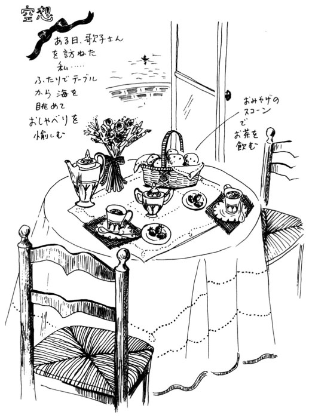
夢の実現を応援する「言葉」
♪
♪
私の「夢実現を応援する書き抜き帳」の「ポリシー」の項目に、こんな言葉が記してある。
◆自己評価はひとりよがりではない。自分より真剣に考えてくれる人がいようか
自己評価というと、確かに客観性もないし「ちょっと甘い」感がしないでもない。でも時には、実際より過小評価しているという場合だってあり得るのだ。それに人から称賛されても、それが単にお世辞としか感じられなかったり、自分のフィルターでマイナスの判断をくだせば、みんなプラスもマイナスになってしまう。もちろん、もともとのマイナスはマイナスの二乗になる、ということだ。これじゃあ、いくら認められても全然幸せな気分になれないし、うれしくもなんともない。
自己評価をひとりよがり、と決めつけたり、人の評価をいつも裏読みするような習慣は、この際ぜひ改めたいと思う。私のことを、私以上に真剣に興味を持ってくれる人はいないのだ。自分に皮肉っぽい態度をとるのをやめよう。自己評価を信頼し、人からの良い評価も全面的に受け入れよう。
そしてもし、人からの熱い支持や共感を得られなかったとしても、私のファンクラブの会長の私だけは「今回のことは、次のステージの糧にしようね。次回は、必ず大成功まちがいなし」のエールを送ってあげることにしよう。
そんなことで「ポリシー」の項目からもうひとつ。
◆幸福の反対語は、あきらめである
これも言うまでもないことなのだが、もう一回おさらいしておきたい言葉のひとつだ。（あの時、あきらめなくて本当に良かったなあ......）とあとになってからしみじみ思え、自分をねぎらってやれると、心底幸せな気分になれる。そして（あの時、なんであきらめてしまったんだろう......）という後悔ほど気分が灰色になるものは、他にないのだ。
失敗やドジを踏んだことは、その時は身をよじりたくなるほど恥ずかしかったにしても、意外に後になるとプラスに転化されている場合が多い。それは、ちゃんとエネルギーを使っているからだろう。使えば、また必ず次のエネルギーが湧いてくる。チャレンジすることなく、古いままのエネルギーをいつまでも放置しておくと、なにに対しても意欲が湧かないし、不幸な心持ちになってくる。
不活発なままでいないでちゃんと燃やすこと、結果は必ず後からついてくるから、一本目のマッチで火が着かなくてもあきらめないこと。自分というマッチ箱の中のマッチはいくらでも増やせるのだから。
どんよりと不幸せそうな人とは、「失敗しちゃったよ」という人ではなく、あきらめ癖がペッタリと暮らしに貼りついてしまった人のような気がする。
さて、こんなふうに私の『書き抜き帳』からもういくつか言葉を紹介して、この章のしめくくりにしたい。
次は、「ライフスタイル」という項目から。
◆悩む時間を工夫する時間に
私は工夫という言葉がとても好きだ。通知表によくある『行動の記録』の欄では、協調性も基本的生活習慣も公共性もみんなＢだったのに、創意工夫の評価だけはＡがもらえたことがそもそも根底にあるらしい。
昔、大好きだった『頭をつかった小さなおばあさん』という本の中に、おばあさんが問題解決のアイデアを考えるシーンがでてくる。確か濡れタオルを頭に巻いて、人差指で鼻のわきをこするとピーンといい考え（よく読むと、それはみんなちょっとピントがズレているんだけれど、そこがまたご愛嬌）が浮かぶのだ。一休さんのトンチ話も繰り返し読んだものだった。そんなことで、この言葉に懐かしさや共感を覚えるのだろう。
悩んでいたって時間は過ぎる。悩むということは、こうあっては困るということばかりを繰り返しシミュレーションすることだ。意識的楽天主義者にとっては、最も避けたい思考形態と言える。そしてやっかいなことに、その悩む自分をつい正当化しようとしてしまうから、いろいろと弁解を考える手間までかかり、ますます時間も労力も無駄になってしまうのだ。
どうせ頭や労力を使うのなら、なにせ得をしたほうがいい。それには、一通り悩んでみたら後は、悩み解決のための方法、創意工夫関係の時間にあてるべきということだ。まず、悩みの素をつきとめること。ちゃんと原因がわかれば後はそんなにむずかしくない。問題点を書き出して、方法を考える。思いつけばいくつでも。これは実は夢実現のやり方とまったく同じことなのだ。その悩みや問題が解決した状態に至ることが、ひとつの願望なのだから。
◆朝ごはんをしっかり食べる
幸せな時は多少の無理もスパイス代わりになるし、不規則も結構楽しめるけれど、悩みや問題がある時こそ、しっかり睡眠時間を取り、しっかり朝ごはんを食べることが大切だ。
まずはちゃんとした朝食を摂ることから、明日のサクセスのためのパワーを貯えたい。私の敬愛するヒロインの歌子さんのように、自分のスタイルを持って、断固としておいしい朝ごはんを食べるべきだ。そのためには、起きてからの〝さわやかな朝の時間〟というのが多少とも必要になってくる。
できれば三十分、無理なら十五分。窓を開けての深呼吸。軽い体操、朝刊のインクの匂い。そしてフレッシュという形容詞のつく食べ物を摂る。果物でもいいし、ジュースでもミルクでも卵でもいい。それと炭水化物、パンでもごはんでも午前中からしっかり燃えるための大切なエネルギー源だから。
◆計画がリラックスを生む
これも大切なポイントのひとつ。学生でもＯＬでも主婦であっても、スケジュール帳は不可欠だ。細々とした用事がちゃんとクリアできないと、大きな夢のほうの足取りもモタモタしてしまうから不思議だ。
私はうっかり屋のほうだから、約束の日にちを間違えたり書類の提出を忘れたりという冷や汗ものの体験をたくさん積んで、ようやく自分なりの計画の立て方のスタイルを確立した。なーんで言うと、大層なことのようだけれど、やりかたは簡単。
とにかくその日の欄に、細々とメモしておくこと。用事が済んだら、そのことのメモを丸で囲むこと。以前は済んだことを丁寧に塗りつぶすことに快感を覚え、片っ端からメモをつぶしていった結果、何が済んだのか後で全然わからなくなってパニックになって以来、丸囲み方式に変えた。
その日にできなかったことは、矢印で次の日に送る。さすがに家賃振込のメモが三日も矢印で引っ張られていると、銀行に行かざるを得ない気持ちになるから有効、そして銀行から戻ってきて丸囲みの儀式を済ませると心からホッとする。結局、私って愚図なんだと思う。大人になると「早くしなさい！」とお尻を叩いてくれる人がいないから、ズルズルしていると限りなくズルズルしてしまう。
完璧になりすぎないように気をつけて計画することは、リラックスを生む。自分のためだけに使う時間、ゆっくりお茶を飲みながら、音楽を聴いたり本を読んだりマニキュアを塗ったり。そんな隙間の時間が活きてくるのも、自分に合った計画性のある暮らしだからこそだろう。そして『夢がかなうノート』作りの時間も、ぜひオリジナルプランとして、スケジュール帳にメモしておいてほしい。
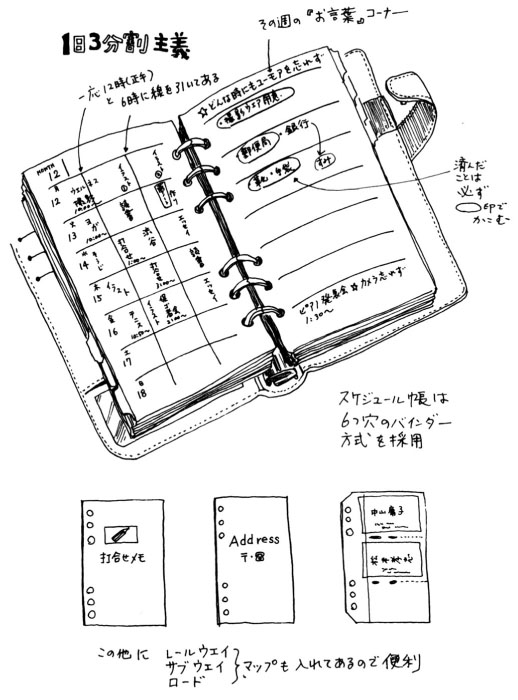
三番目の項目は「センス」について。
◆なりふりかまってテキパキ働く
◆大人こそ、清潔感のあるお洒落を
私は、お酒落をしている人を見るのが好き、そして水を得た魚のように自分の仕事をこなす前向きな女性に魅かれる。そんな女性は大人としてのゴージャスさや自信に加え、とても清潔感のある丁寧なお洒落を楽しんでいる。若さにはかなわない点も多々あるにしても、酸いも甘いも知り尽くしている女性の清楚さは、宝石より輝いてみえる。
きちんと手入れされた指先、行き届いたヘアカット、よい姿勢に白い歯。長く生きてきたことを誇れるだけの自信と自分への心づかいが、大人の女を魅力的にする。そして、そのシーンにふさわしいよい材質の服を着ることで幸せを感じてほしい。
たとえばラメ入りのセーターが好きなら、昼間のデパートや職場より、気のおけない友達との夜の集いに着てほしい。できれば一つの服にさまざまな飾り、刺繡にプリント柄、カットワークにフリンジ、などのおまけを（あら豪華だわ、得しちゃった）という感覚で求めず、ベースになる好きな色と上質の素材、カットの良さがしっかり押さえられているシンプルなものを選んでほしい。それに気分や用途に合わせて、ストールやイヤリング、バッグなどがプラスされるわけだから。
ゴテゴテチャラチャラと派手なのと、華やかなのはまったく別の次元の問題だ。前者が服に着られているのに対して、後者は服を引き立て役にできているヒロインだ。そして必ず、ヒロインには華やかでありながら清潔感がある。一番いい例は花嫁だろう。どんなファッションショーでも最後はマリエファッションでフィナーレになる。
白い歯、白衿、白のカメリアのコサージュ、アイロンのピシッと利いた白のシャツや麻のハンカチーフ。清楚のエッセンスを大人のバランスで上手に活かして、幸せにテキパキ働けることは、本当にうれしい。
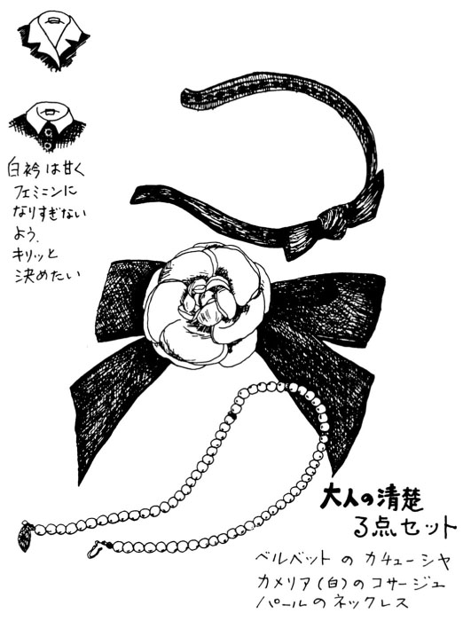
最後の項目は「アクション」だ。
◆動作は感情を作る
動作はモーション、感情はエモーション。タマゴが先かニワトリが先か、悲しいから泣くのか泣くから悲しくなるのか。時と場合によって違うにしても、それらしい動作をすることで、感情のほうがついてくる。という例はいくらでもあると思う。これをポジティブに利用しない手はない。
知らず知らずにへの字になっている口元、いの字にしてみよう。丸まった背筋を伸ばしてみよう。とぼとぼと足を引きずるのはやめて、少し早めに歩いてみよう。せかせかしないでゆったりしたエレガントなお辞儀をしてみよう。
現実の問題は、そんなことだけでは好転しないかもしれない。でも、同じ事実であっても、こちらの受け取り方次第でずいぶんと様子が変わってくる。同じプレゼントでも、喜ぶ人もいれば気に入らないと不平を言う人もいる。つらさや悩みというありがたくないプレゼントだって、こちらの動き方によっては、いくらかでも軽く明るく感じられるようになるのではないだろうか。
動作を明るく元気にすることで、気持ちも明るくなる。こんな簡単なことが、意外に大きな力になるものだ。
◆自分の反応を変えると、相手も変わる
人間関係は鏡のようなものだ。
こちらが敬遠している時は、たいてい相手もなんとなくこちらに対して冷ややかな感じを持っているようだし、（いい人だなあ......）という電波はやはり（仲良くなりたいなあ......）という波に乗って戻ってくるような気がする。
うまくいかない関係の場合は、相手の出方をあれこれと詮索するより、シンプルに親愛の伝わる形、ニッコリとか「元気？」とかで突破口を開いてしまおう。別に心底から相手を好きにならなくたっていい。とりあえず表面的な反応だけで充分。無理に好きになろうとすると、かえってぎこちなくなる。相手も一度か二度は、以前の通りの反応でも、三回目にはきっと変わる。それはこっちが相手より下の立場になるとか、逆に出し抜くとかの力関係の結果ではない。
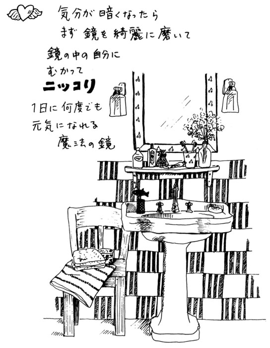
社会生活をしていれば、いろいろな人がいてあたりまえだ。でも、反応の仕方に自分なりの工夫をほどこすことで、まったくタイプの違う人や苦手だった人とも、つかず離れずそれなりに快適な距離がとれるようになると、大人としての自信がつく。そうすると、相手もこちらの落ち着きに、必ず一目置くようになるから不思議。
人間学の勉強だと思って、意識的に自分の出方を研究してみよう。またひとつ、サクセスウーマンの強力な武器を手に入れたことになる。
〝夢をかなえる力〟を信じて ――エピローグ
私自身が『夢ノート』の筆頭にいつもあげていたのは本を出版することだ。
これまで何冊かの本を出してきた。そのプロセスで苦しいことや悔しさや問題がなかったわけではないが、それを補ってあまりある素晴らしい体験だったことはまちがいない。そのひとつひとつのドラマは、私にとってまさに〝夢をかなえる旅〟だった。
最初の一冊は、田舎に建てたアトリエと頑固な額縁屋さんと手紙のおかげで生まれたと言ってもいいと思う。
教員時代の私が、一時期絵を描く意欲をなくしたことについては、前にも触れた。その頃、私だけでなく家族のさまざまな状況と願望がうまく一致して、赤城山の麓にアトリエ兼ウィークエンドハウスを建てることになった。その土地にしても、母が長年『夢』として描いていたセカンドハウスのイメージがあって見つけることができたものだった。
そんなアトリエで過ごす週末や休暇の中で、私は絵を描く習慣を再び取り戻した。少しずつ絵がたまっていくことは、とても励みになった。
「小さな個展をしてみようかな」
夫にそう話すと、ちょうどすごく素敵な額縁を作ってくれる店を見つけたところだと言う。ただし、絵を持っていかないと作ってくれないらしい。絵を見てぴったりの額を作ること、それがその店のポリシーのようだ。私は早速、夫によく描けたと思う絵を数枚渡した。
ウィークデイは単身、東京にいる夫は、すでに少しずつイラストの仕事を始めていた。額縁を注文するために出かけた時、電車を降りてたまたま近くに知り合いの出版社があるのを思い出し、立ち寄った。それがじゃこめてい出版だった。ちょうど私の絵を持っていたので、広げて見せたことから始まって、私が田舎で教師をしながら、週末になると草むしりをしたり絵を描いたりしているという話になったらしい。カントリーという言葉が使われはじめた頃だった。
その年の春休み、私はじゃこめてい出版のＡ氏と話をしていた。「絵については見せてもらったけれど、文章はどうかなぁ」。私は無謀にも、じゃこめていからも本を出版されている熊井明子さんのお名前を出した。「私、よく手紙を書いてるんです」。
そして夏休み、私はアトリエの庭の雑草は生え放題にしたまま、生まれてはじめて締め切りに追われる生活を体験していた。本のタイトルは『カントリーの風をあなたに』。サブタイトルは「ウィークエンドハウスからの贈りもの」と決まった。それより以前、Ａさんからの電話を受けた熊井明子さんが、私のことを推薦してくれていたことを、その時の私はまだ知らなかった。
＊
次の本のきっかけになったのは、この『カントリー』の本である。ＰＨＰ編集部からの電話で、イラストとエッセイの両方を書ける人を探していたところ、『カントリー』の本であなたのことを知った。ついては本誌に一年間、連載してほしいという依頼だった。ちょうどその時は教師をやめようと考え始めたところだったから、なにより心強い電話だった。私なりに精一杯、ノルマをこなした。それは『暮らしのスケッチブック』というページだった。
ここまでで普通なら、ＰＨＰとの縁は切れてしまうはずだった。私は「京都に桜を見に行かない？」と母を誘い、京都の本社まで押しかけて行った。どうしてもＰＨＰから次の単行本を出したいと思っていたからだ。当時の『夢ノート』には極太のペンで「二冊目の単行本をＰＨＰから出す」の文字が書かれている。
返事はなかなか来なかった。ついに退職の日が来ても連絡はなかった。とりあえずたいした仕事もないフリーのイラストレーターを始めて二か月、親類の家から帰ってきて鍵をあけようとしていると電話が鳴っていた。それが二冊目の本が生まれることを知らせる電話だった。
この本のタイトルが『いつだって幸せコーディネイト』、そして三冊目はすぐに決まった。それが『ふたりのためのコーディネイト』（東京書籍）である。いずれもカラーのイラストページとモノクロのエッセイページという構成の本作りで統一されている。その後の私の仕事のスタイルは、相次いで出た二冊の本で決まったように思えた。
表面的にはごく順調だったし、いろいろな仕事を体験することもできたけれど、時折なにかが足りない気持ちがした。なにか懐かしいものを失ってしまっている感じがぬぐい去れなかった。その正体は教員をしていた時に生徒たちに話していた、あの恥ずかしいとさえ感じていた語りだったのだ。
ある時、知り合いを通じて講演を頼まれたことがある。そして話しているうちに、そのことに気づいたのだ。私の中にしっかり『夢』について語り『励ます』自分が根づいていたことに。
そして講演が終わり、こんな質問を受けた。
「どうして今日話されたようなことについての本を書かれないんですか？」
その時の質問は、いつまでも私の中に「？」マークとして残った。次は、夢をかなえたいと思っている人を声援する本を書いてみたい。それを文章で表現することが、私にできないものか。それが今の私にとって最良の語りの部分になるのではないか。ようやく本当に書きたいものを見つけられたような気がした。
＊
四冊目の本の方向だけは決まった。私は出版のあてのないまま、今まで自分で夢実現に向けてどんなアプローチをしてきたか、少しずつまとめてみることにした。幸い、住まいと仕事場を一緒にしたことで、決められた締め切りのある仕事以外の作業をする時間を作ることができるようになった。夕食後、娘が宿題をしているそばで、私も自分で出した〝宿題〟をやる日が続いた。
元来、ご褒美主義者の私は、このところがんばって〝宿題〟をやっている自分に「よくやってるね、たまにはお洒落して銀座にでも行ってきたら」と提案してみた。久々にきちんとメイクもしようかと鏡を見てふと思った。東京に越してきてから写真らしきものを撮った記憶がない。そうだ、銀座に行く前にちょっと一枚記念に撮ろう。地下鉄の駅上のビルに確か写真屋があったっけ。
ちょっと恥ずかしいから「あの、パスポート用にするので」と切り出した。「三〇分足らずで出来ますが、どうなさいますか？」。どうせ、ひとりで気ままに銀ブラするだけだ。美人に撮れたかどうか早く見たいから、隣の本屋さんで時間をつぶしていよう。しばらくぶりにミステリーの新刊でも買って、銀座ではお気に入りのチーズケーキを調達して、ウフフ、なんかウキウキしちゃうな、うれしい、うれしい......。
ひとりでヘラヘラしながら新刊本のコーナーに。おや『うれしい暮らし』だって。あれ、本田葉子さんの本だ。彼女のイラストは、ノビノビと楽しそうだからすぐわかる。前に買った『金魚の大笑い』もすごく楽しかった。手に取って、即座に買うことにした。写真屋のソファですぐに読んだ。期待どおり元気いっぱい、アイデア満載の中身に満足した。
その時、急に私に訪れた直感のようなもののことは、どう言ったら説明がつくか私にもよくわからない。とにかく銀座行きは中止だ。そそくさと写真を受け取り、中身の確認もせず、家に戻った。このところ夜になるとやっていた〝宿題〟と『夢ノート』を手にした。しきりに私を促す内なる声が聞こえる。
「今だよ......」
決して出版経験の豊富とは言えない私だが、ひとつだけ確信していることがあった。それは担当編集者との相性、チームワークの大切さだ。私は本田葉子さんの個性をノビノビと発揮させた〝誰か〟になにかを賭けてみたいと思った。しかし、こんな自分勝手な思い込みで見ず知らずの人にどうやってなにを説明すればいいんだろう。
今でも思うのは、もし、一晩考えてから行動することにしよう、という結論にしていたら、この本は存在しなかったということだ。まちがいなく、常識や無難の逆襲にあって私は名前も知らない〝誰か〟に電話することをとりやめていただろう。
幸い、朝からポジティブな流れの中にいたその日、気づくと『うれしい暮らし』の奥付に載っていた編集部の電話番号をプッシュしていた。
「ハイ、大和出版です」
「あのー、本田さんの本を担当した方とお話ししたいんですが」
「お電話かわりました」
「ええと、中山と申します。今、本田さんの本を読んだんですが......」
この時、電話口の向こうにいたのが、現在この本を担当してくれているＫさんだった。
「小さな行動の積み重ねが、あなたをつくる」
小さな夢の種から生まれたこの本を手に取ってくださったあなたに、この言葉を最後に贈りたいと思う。
どんなに手が届かないように思えることでも、毎日すべてのことが実行できなくても、ほんの小さな行動の積み重ねで少しずつ少しずつ夢の粉が貯まっていくはずだ。
突然、ラッキーは降ってくるのではなく、木の実がなるように、果物が熟すように自然に手に入るのだ。小さな望みをていねいに扱ってあげる。ポイと簡単に捨ててしまわないで大切に抱いてやる。その気持ちを忘れなければ、必ず思い通りの人生をつくり上げられる。
おわりに
『絵は一筆一筆で完成していく。レンガをひとつずつ積んでいけば必ず塀ができる』という言葉がある。そしてこの本も、とうとう仕上がる時がきた。
とにかく無性に『夢実現』を応援する本が書きたかった。こんなシンプルな情熱は久しぶりだったし、まったくなんの目算も立っていないのに、私は泳ぎ出していた。今にして思うと、プールの脇で長いこと準備運動ばかりしていた自分のことが、ちょっとばかり不 憫 に思えたのかもしれない。
はじめに思っていたような『夢をかなえるという素敵な旅のガイドブック』に仕上がったかどうかは自信がないけれど、言いたかったことはひとまず私なりの語りかたで、話しおえたように思う（でも、もともとおしゃべりな体質の私のことだから、またまくしたてたくなるような気もする）。とりあえず今は、キッチンの棚の整理をしたり、レンジや換気扇を磨いたりすることに専念しようと思う（なにせ半年間の手抜き家事のあとゆえ）。
レンジと違って、日々の生活で家族にかけた迷惑は、半日やそこいらで取り返しがつくとも思えないけれど、私がこの本を書けて本当に幸せだと喜んでいることに免じて、どうかよろしく。
平成七年 春近し
中山庸子
文庫版のためのあとがき
最近の私は、イラストレーターよりエッセイストと紹介されることの方が多くなった。実際、この本を書き下ろした九四年から今年の間に、矢継ぎ早に何冊もの本を書いた。毎日ワープロに向かい、時折鉛筆や絵の具を引っ張り出してきてイラストも描く、という生活になっている。そのことは私にとって「うれしい誤算」なのである。
そして、ときたま初対面の人に「ああ、『夢ノート』の中山さんですか」と言われることがある。そんなときは『夢ノート』という言葉がそれだけ認知されたのかと感慨無量である。
エピローグの部分で、私とＰＨＰ研究所の「なれそめ」について書いているが、あれからもう十年以上の歳月が流れた。
当時の私はまだ学校に勤めており、絵や文を仕事にすることをひたすら夢見ていた。
縁あって『「夢ノート」のつくりかた』の文庫本が、ＰＨＰから出ることが決まったとき、現在の私は「あの頃の私」に「よかったじゃない......」と小さい声で呼びかけたのだった。
そして私の『夢ノート』には、こんな項目もある。
○ 文庫本を出すことがあったら、その解説は熊井明子さんに！
今回、その夢にも♡マークがつけられることになった。熊井先生に心より感謝すると同時に、やっぱり夢はあきらめずにいれば、かなうものなのだ、という思いを新たにした。
最後にバッグに入れやすい大きさになった『夢ノート』が、読者の皆様の夢実現の手助けになることを、心より祈っています。
平成十年 波音の入ったＣＤを聴きながら
中山庸子
解 説
熊井 明子
人は誰でも夢を持って生きている。夢＝願望なんて全くない、という人も、心の奥を探ってみたら何か一つは見つかるはず。
その夢を、ぜひかなえたいと真剣に思ったとき、あなたはすでに夢の実現に向かって一歩踏み出している。でも、そこからが大変。一体どうすれば夢をかなえる旅を続けて、目的地に着くことができるのだろうか。
その答えを、楽しく明るく分かりやすく示しているのが、中山庸子さんの『「夢ノート」のつくりかた』である。本書を読み、それなりの努力をすれば、あなたの夢は必ずかなう。それが荒唐無稽なものだったり人を傷つけたりしないかぎり。
中山さんは、驚くほど率直に自らの体験にふれながら、夢の実現の秘訣を、おしみなく書かれている。
まず最初は夢のリストである。例として二十あげられた中には、
○シャネルのバッグが欲しい
○英語がペラペラになりたい
○５㎏ダイエットしたい
○すてきなボーイフレンドが欲しい
○ボランティア活動をしたい
○本を書いてみたい
○きれいになりたい
などが含まれている。多分いくつかは、あなたの夢と重なると思う。
それらを、具体的にどのように実現させていくかは、すてきなイラストレーションが添えられた本文をお読みいただきたい。
夢がかなったら、自分のお気に入りの〝かなった記念〟をノートに記すことを中山さんはすすめている。王冠マークをつけてもいいし、ピンクのハートのシールでも。そして、中山さんは「夢ノート」の効用を次のように語っている。
私自身、『夢ノート』のページを振り返ってみると、すでにかなった夢のマークがあまりにたくさんあることに、今さらながら驚いているくらいだ。
♡『夢ノート』について書いた本を出版する
♡その本の表紙は、夫の松本孝志のイラストレーションで飾る
♡南青山に自宅兼事務所を構え、二人で仕事をする
♡男の子と女の子の母親であることを楽しむ
♡週末はウィークエンドハウスでの生活を満喫する
♡神宮外苑でテニスのレッスンを受ける
などなど、はじめは想像の絵にしかすぎなかったことが、ひとつずつかなえられ実現していくことは、本当に心躍る旅そのものだ。
これは決して単なる自慢話ではない。中山さんは、「あなたも夢をかなえて！」という熱い思いをこめて、「夢ノート」が効く証拠として、敢えてここまで書かれたのである。
「夫の松本孝志」さんは、他のページにも何回か登場される。「松本くんと結婚すること」とノートに書いて、〝恋愛の熟練者にはない初心者のパワー〟で見事に実現させてしまうところなど、あらためて「おめでとう！」と言いたくなる。その後の中山さんの初心を忘れない熱愛ぶりにも感動する。これからも松本さんの流麗なイラストレーションで飾られた御本を拝見するのが楽しみだ。
『「夢ノート」のつくりかた』のプロローグで、中山さんは『私の部屋のポプリ』を紹介されている。この本の中で私は、いわゆるニューソート系のアメリカの本を何冊か取りあげた。それらに共通しているのは、心の力、あるいは思考が現実を変える、という考え方とその方法（視覚化など）である。〝実験〟してみたところ、夢がかない、私の人生は変わった。読者の皆さんにもぜひ体験していただきたくて、エッセイに書いたのだった。
中山さんは、私の願いを受けとめて行動された。だが、『私の部屋のポプリ』を読まなくても、どのみち中山さんは夢の実現方法を見出されたことだろう。大切な夢をあきらめずに「かなう」と信じ続けてやがて、その実現方法を磁石のように引きつけたに違いない。
長年の間にいただいたお手紙と、一度個展でお会いした印象を総合すると、中山さんは子供のような無邪気さと、大人の知性をあわせ持った誠実なお人柄の方。こういう愛すべき女性には、誰もが手を貸したくなるものだ。
あなたが読後、「私も試してみようかしら」と思われたら、即スタートすることをおすすめしたい。この本は、あなたを勇気づけ励まし、〝夢実現の旅〟の最高の道連れになることだろう。
（エッセイスト）
この作品は、一九九五年二月に大和出版より刊行された。
〈著者紹介〉
中山庸子 （なかやま ようこ）
１９５３年、群馬県に生まれる。女子美術大学、セツ・モードセミナー卒。女子高校の美術教師を経て、現在エッセイスト、イラストレーターとして活躍中。自身の体験をまとめた『夢ノート』シリーズで、読者から圧倒的な支持を集める。本書は、その第一作目を文庫化したものである。
著者は、『「夢ノート」のつかいかた』『「夢ノート」の贈りもの』（以上、大和出版）、『がんばらない勇気がもてる本』『毎日、新しい自分を発見する本』（以上、ＫＫベストセラーズ）、『明日が待ち遠しくなる言葉』（三笠書房）、『夢を実現する３冊の手帖づくり』（講談社）、『「とりあえず」の魔法』（光文社文庫）など多数。
「夢ノート」のつくりかた
あなたの願いが、きっとかなう
著 者：中山庸子
© Yoko Nakayama
この電子書籍は『「夢ノート」のつくりかた あなたの願いが、きっとかなう』一九九八年九月十六日第一版第一刷発行を底本としています。
電子書籍版
本書の無断複写（コピー）は著作権法上での例外を除き、禁じられています。